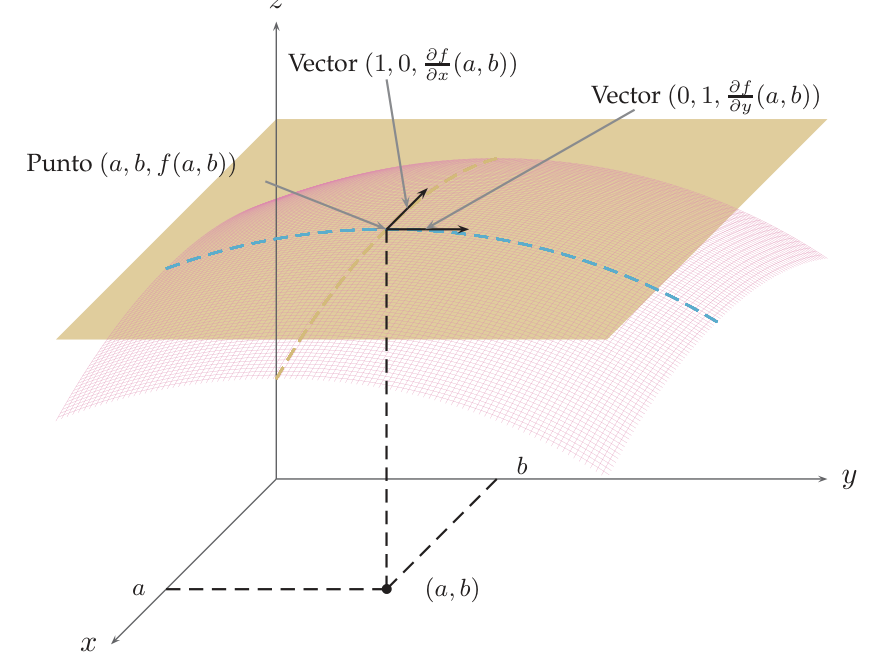

Módulo V · Aplicaciones de la diferencial · Tema 5.1
Diferencial de una función. Función diferenciable. Plano tangente
Qué significa que una función de varias variables «se parezca a un plano» cerca de un punto: la definición de diferenciabilidad, por qué no basta con tener derivadas parciales, cómo se comprueba en un punto problemático y cómo se calculan el plano tangente y la diferencial.
Libro oficial: Cálculo para Ingenieros, §5.1 (pp. 186-193)Ejercicios: E Ej. 5.1–5.12Examen: 11 problemas de X⏱ ~6 h de estudio
U oficial
E ejercicios
P propio
X exámenes
— pasa el ratón (o toca) por cada etiqueta para ver libro y página; en pantallas anchas aparecen en el margen derecho.
La idea del tema en una frase
Mira una superficie de montaña con una lupa muy potente: cuanto más te acercas, más plana parece, hasta confundirse con un plano inclinado. Si eso ocurre, la función es diferenciable en el punto, ese plano es el plano tangente y su parte «lineal» es la diferencial. En una variable «derivable = tiene recta tangente»; en dos variables tener derivadas parciales no basta (apartado 1).
Si solo tienes un rato, llévate esto. El resto de la página lo desarrolla con ejemplos y ejercicios.
Método en 4 pasos
Traduce la pregunta: ¿te piden el plano tangente, la diferencial, aproximar un valor, o estudiar si es diferenciable en un punto?
Función «normal» (fórmula única, sin casos): sus parciales son continuas, luego es diferenciable; calcula $\nabla f(a,b)$ y sustituye, comprobando antes que el punto está en la gráfica ($c=f(a,b)$).
Punto especial (la función se define aparte): ¿continua? ¿existen las parciales (por definición)? Si falla una, no es diferenciable y terminas. Si no, estudia $Q$ con el gradiente candidato.
Comprueba: el plano pasa por el punto; en $Q$ restaste $f(a,b)$ y $f_xh+f_yk$; y en polares la cota no depende de $\theta$.
Qué hago según lo que piden
¿«Plano tangente en el punto $(a,b,c)$»? $\to$ $c=f(a,b)$, gradiente y $z=c+f_x(x-a)+f_y(y-b)$.
¿«Diferencial de $f$»? $\to$ $Df(a,b)(x,y)=f_x(a,b)\,x+f_y(a,b)\,y$, como función lineal de $(x,y)$.
¿«Estudia la diferenciabilidad en el origen»? $\to$ continua, parciales, $Q$ en polares.
¿«Enuncie una condición suficiente»? $\to$ parciales en un entorno y continuas en el punto.
¿«Aproxima $\sqrt{\dots}$»? $\to$ punto cercano fácil y $f\approx f(a,b)+Df(a,b)(h,k)$.
Fórmulas y enunciados, con su «cuándo se usa»
Fórmula o enunciado
Cuándo se usa
$z=f(a,b)+f_x(a,b)(x-a)+f_y(a,b)(y-b)$
Plano tangente (5.2), si $f$ es diferenciable en $(a,b)$.
Definición 5.1: probar o refutar la diferenciabilidad en un punto especial.
Diferenciable $\Rightarrow$ continua y con parciales
Filtro: discontinua o sin una parcial $\Rightarrow$ no diferenciable (Teorema 5.1).
Parciales en un entorno y continuas en el punto $\Rightarrow$ diferenciable
Atajo para funciones «normales»; si falla, no se concluye nada.
$Df(a,b)(x,y)=f_x(a,b)\,x+f_y(a,b)\,y$
Diferencial: aplicación lineal, no un número.
$f(a+h,b+k)\approx f(a,b)+Df(a,b)(h,k)$
Aproximar valores y estimar errores.
Qué cae
En los exámenes resueltos hay 11 problemas de este tema: estudio de la diferenciabilidad en el origen de una función a trozos (5), plano tangente (3), diferencial (2) y una pregunta de teoría (1). En el libro de ejercicios son E 5.1-5.12. Tabla completa por tipo: pestaña Examen.
U pp.186-193P
Camino de estudio: elige tu nivel
Empieza por «Mínimo»; luego «Completo» y, para nota alta, «Reto». Marca cada ejercicio al terminarlo.
Los apartados de idea (1), función diferenciable y plano tangente (2), qué implica y qué basta (3) y diferencial (4), y el mapa de decisión (apartado 5).
Un ejercicio de cada tipo:
E 5.1 (qué implica qué), E 5.3 (plano tangente), E 5.7 (continua y con parciales, no diferenciable), E 5.11 (diferenciable por la definición), Examen 1 (diferencial), Examen 6 (discontinua en el origen), Examen 8 (parciales continuas) y Examen 9 (Q tiende a 0).
Todo el tema (desmarca «Solo lo esencial»), con el interactivo.
E 5.1-5.12, los 11 exámenes, los ejemplos propios y todas las prácticas.
🟣 Reto · ≈ +1,5 h
E 5.5 (diferenciable con parciales discontinuas), E 5.10 (con L'Hôpital), P3 y P4 (¿para qué exponentes?), Examen 7 (raíz cúbica) y las prácticas ★★.
Verás solo lo esencial; desmarca para ver todo.
0Antes de empezar U pp.185-188
Qué necesitas saber ya
Derivadas parciales y gradiente (tema 4.3): $f_x$, $f_y$, $\nabla f(a,b)=(f_x(a,b),f_y(a,b))$, y calcularlas por definición en un punto especial (función a trozos).
Límites en dos variables (tema 4.2): demostrar que un límite no existe con dos caminos (rectas $y=mx$), y polares: con $F(\rho,\theta)$, si el límite depende de $\theta$ no existe; si $|F-l|\le g(\rho)\to0$, el límite es $l$. También el emparedado y la continuidad.
Plano en $\mathbb R^3$ y norma (tema 4.1): $\|(h,k)\|=\sqrt{h^2+k^2}$.
L'Hôpital (Tema 2): solo para el Ej. 5.10.
Mapa del tema: qué se pide en los ejercicios y en el examen
(A) Plano tangente y diferencial de una función «normal» en un punto (E 5.2-5.4; X, una pregunta corta casi cada convocatoria). (B) Estudiar la diferenciabilidad en el origen de una función definida a trozos: es el «Ejercicio 6» de muchos exámenes (E 5.5-5.7, 5.9-5.12; X 2010-2018). (C) Preguntas teóricas: qué implica qué, condición suficiente (E 5.1, 5.8; X p.60). Lo que sigue (regla de la cadena, reglas de la diferencial, función implícita…) es el resto del Tema 5.
1Idea: aproximar una superficie por un plano U pp.186-188
Lo que vas a aprender. a ver por qué hace falta una definición nueva: un plano tangente tiene que acertar en todas las direcciones, no solo a lo largo de los ejes.
Cómo lo reconoces: «¿Tiene plano tangente?», «si tiene parciales, ¿es diferenciable?».
Qué haces: Calculas el candidato $z=f(a,b)+f_x(a,b)(x-a)+f_y(a,b)(y-b)$ con las parciales, y después hay que comprobar que de verdad se pega a la gráfica (apartado 2).
Ejemplo mínimo: Para $f=x^2+y^2$ en $(0,0)$ el candidato es $z=0$.
Idea intuitiva · de la recta tangente al plano tangente
Con una variable, «$f$ es derivable en $a$» significa que cerca de $a$ la gráfica es casi la recta $y=f(a)+f'(a)(x-a)$, y además la derivabilidad ya garantiza la continuidad. Con dos variables, la gráfica es una superficie y su «recta tangente» debe ser un plano. Un plano queda fijado por un punto y dos direcciones. Las dos direcciones que ya conocemos son las de las derivadas parciales: moviéndonos solo en $x$ (con $y=b$) o solo en $y$ (con $x=a$) la gráfica tiene dos rectas tangentes, con vectores directores $\big(1,0,\frac{\partial f}{\partial x}(a,b)\big)$ y $\big(0,1,\frac{\partial f}{\partial y}(a,b)\big)$. El plano que contiene a esas dos rectas por $(a,b,f(a,b))$ es el candidato a plano tangente.
U pp.186-187

Figura 5.1 de U: plano que contiene a dos rectas tangentes. U p.187
Plano candidato (5.1)
Si $f$ tiene parciales en $(a,b)$, el plano que pasa por $(a,b,f(a,b))$ y contiene a las dos rectas tangentes anteriores es
$$z=f(a,b)+\nabla f(a,b)\cdot(x-a,\,y-b)=f(a,b)+\frac{\partial f}{\partial x}(a,b)(x-a)+\frac{\partial f}{\partial y}(a,b)(y-b).\tag{5.1}$$
Es la versión en dos variables de $y=f(a)+f'(a)(x-a)$.
U p.188
Por qué no bastan las parciales
Tener las parciales solo garantiza dos rectas tangentes: el plano (5.1) puede existir y no «pegarse» a la superficie en las demás direcciones. Hace falta una definición que mire todas las direcciones a la vez: la diferenciabilidad (contraejemplo con números en el Ejercicio 5.1).
U p.188
2Función diferenciable y plano tangente U pp.189-190
Lo que vas a aprender. a decidir si $f$ es diferenciable con el cociente $Q$ y a escribir el plano tangente.
Cómo lo reconoces: «Estudia la diferenciabilidad en $(0,0)$», «halla el plano tangente».
Qué haces: Calculas $\nabla f(a,b)$ y estudias $Q=\frac{f(a+h,b+k)-f(a,b)-f_xh-f_yk}{\sqrt{h^2+k^2}}$: si $Q\to0$, es diferenciable y el plano es (5.2).
Ejemplo mínimo: $f=x^2+y$ en $(1,2)$: $\nabla f=(2,1)$ y $Q=\frac{h^2}{\sqrt{h^2+k^2}}$, con $|Q|\le|h|\to0$.
Idea intuitiva · el error tiene que ser «más pequeño que la distancia»
Aproximamos $f$ cerca de $(a,b)$ por la altura del plano: $f(a+h,b+k)\approx f(a,b)+\nabla f(a,b)\cdot(h,k)$. El error es $E(h,k)=f(a+h,b+k)-f(a,b)-\nabla f(a,b)\cdot(h,k)$. Cualquier función continua tiene un error que tiende a $0$ al acercarse; eso no distingue nada. Lo que se pide a un plano tangente es más: que el error tienda a $0$ más deprisa que la distancia $\|(h,k)\|=\sqrt{h^2+k^2}$ al punto. Ejemplo numérico: si nos movemos $0{,}01$, el error debe ser mucho menor que $0{,}01$ (digamos $0{,}0001$); si nos movemos $0{,}001$, mucho menor que $0{,}001$. Eso es decir que el cociente $E/\|(h,k)\|$ tiende a $0$, y por cualquier camino de llegada.
Sea $f$ definida en un entorno de $(a,b)$ y con derivadas parciales en $(a,b)$. Se dice que $f$ es diferenciable en $(a,b)$ si
$$\lim_{(h,k)\to(0,0)}\frac{f(a+h,b+k)-f(a,b)-\nabla f(a,b)\cdot(h,k)}{\|(h,k)\|}=0.$$
Entonces el plano tangente a la gráfica de $f$ en $(a,b,f(a,b))$ es
$$z=f(a,b)+\nabla f(a,b)\cdot(x-a,\,y-b).\tag{5.2}$$
U p.189
Cómo leerla
(i) Las parciales deben existir antes de empezar: el gradiente aparece dentro del límite. (ii) El gradiente que se resta es el único candidato posible: restando cualquier otro vector $(p,q)$, el límite no sería $0$ (si lo fuera, tomando $k=0$ saldría $\frac{f(a+h,b)-f(a,b)}{h}\to p$, es decir, $p=f_x(a,b)$; e igual $q=f_y(a,b)$). (iii) Es un límite doble en $(h,k)\to(0,0)$: se hace con polares o con caminos, como en el tema 4.2. (iv) «No diferenciable» significa que el límite no existe o no vale $0$; y entonces no hay plano tangente.
Ejemplo 5.1 de U · $f=e^{-1/(x^2+y^2)}$, $f(0,0)=0$, es diferenciable en $(0,0)$
Parciales en $(0,0)$ por definición: $\frac{f(h,0)-0}h=\frac{e^{-1/h^2}}h\to0$, y lo mismo en $y$: $\nabla f(0,0)=(0,0)$.
Cociente con ese candidato: $Q(h,k)=\dfrac{f(h,k)}{\sqrt{h^2+k^2}}$. En polares ($h=\rho\cos\theta$, $k=\rho\operatorname{sen}\theta$): $Q=\dfrac{e^{-1/\rho^2}}{\rho}$, que no depende de $\theta$.
$\lim_{\rho\to0}\frac{e^{-1/\rho^2}}{\rho}=0$ (la exponencial mata a cualquier potencia). Luego es diferenciable en $(0,0)$, con plano tangente $z=0$.
U pp.189-190
Ejemplo · $f=x^2+y$ en $(1,2)$ por la definición
$\nabla f(1,2)=(2,1)$. Numerador: $(1+h)^2+(2+k)-3-2h-k=h^2$. Cociente: $Q=\frac{h^2}{\sqrt{h^2+k^2}}$, y como $h^2\le h^2+k^2$, $|Q|\le\sqrt{h^2+k^2}\to0$. Diferenciable (su plano tangente se calcula en el Ejemplo 5.4).
P
Interactivo propio. Arrastra para girar. La superficie (azul) y el plano tangente (naranja) se dibujan en una ventana cuadrada de lado $2w$ alrededor del punto. Baja $w$ con el deslizador «Ventana»: si $f$ es diferenciable, superficie y plano se confunden y el cociente (error máximo)/$w$ tiende a $0$, que es justo la Definición 5.1. Prueba la última función en $(0,0)$: tiene parciales ($\nabla f=(0,0)$) pero por mucho que acerques el zoom el plano $z=0$ sigue separado de la superficie, porque a lo largo de la diagonal $f(h,h)=\frac12$: no es diferenciable. Mueve $a$ o $b$ fuera del origen y vuelve a ser diferenciable. P
3Qué implica y qué basta para ser diferenciable U pp.190-192
Lo que vas a aprender. a usar las implicaciones del Teorema 5.1 como filtro y la condición suficiente como atajo.
Cómo lo reconoces: «¿Es continua? ¿tiene parciales? ¿es diferenciable?», «enuncie una condición suficiente».
Qué haces:Filtro: si no es continua o falta una parcial, no es diferenciable. Atajo: parciales continuas en un entorno $\Rightarrow$ diferenciable. Si el atajo falla, no se concluye nada: se va a la definición.
Ejemplo mínimo: $\frac{4x^3}{x^2+y^2}$ con $f(0,0)=0$ es continua y tiene parciales, pero no es diferenciable (E 5.7).
Idea intuitiva · dos filtros y un atajo
Si la superficie es casi un plano cerca del punto, entonces no puede tener saltos (es continua) ni «picos» a lo largo de los ejes (tiene parciales). Eso da dos filtros para descartar: continuidad y parciales. Pasarlos no basta. Y hay un atajo para afirmar: si las derivadas parciales son continuas, la función es «lisa» y seguro es diferenciable.
Teorema 5.1 · diferenciable ⟹ parciales y continua
Si $f$ es diferenciable en un punto, entonces admite derivadas parciales en él y es continua en él.
Contrarrecíproco (lo que se usa en la práctica): si $f$ no es continua en el punto, o le falta alguna parcial, entonces no es diferenciable.
U p.191
Ejemplo 5.2 de U · dos funciones que no son diferenciables en el origen
$f(x,y)=xy+1$ si $x>0$, $f(x,y)=x-y$ si $x\le0$. Por el eje $x$ positivo tiende a $1$ y $f(0,0)=0$: es discontinua en $(0,0)$, luego no diferenciable.
$g(x,y)=x+|y|$. Es continua, pero $\frac{g(0,h)-g(0,0)}h=\frac{|h|}h$ vale $1$ por la derecha y $-1$ por la izquierda: no existe $\frac{\partial g}{\partial y}(0,0)$, luego no diferenciable.
U p.191
Condición suficiente de diferenciabilidad
Si $f$ admite derivadas parciales en un entorno de $(a,b)$ y estas son continuas en $(a,b)$, entonces $f$ es diferenciable en $(a,b)$. (Una función continua y con derivadas parciales continuas se llama regular.) En la práctica: una función dada por una única fórmula elemental (polinomios, cocientes, exponenciales, senos, logaritmos…) es diferenciable en todo punto donde sus parciales, calculadas con las reglas habituales, existen y son continuas en un entorno. Cuidado con raíces, valores absolutos y puntos que anulan un denominador o donde la función se define aparte (E 5.6, E 5.12): ahí hay que ir a la definición.
U p.192
Ejemplo 5.3 de U · $f=\operatorname{sen}\frac1{x^2+y^2}$ es diferenciable en todo su dominio
El dominio es $\mathbb R^2\setminus\{(0,0)\}$. Allí las parciales son $f_x=-\frac{2x}{(x^2+y^2)^2}\cos\frac1{x^2+y^2}$ y $f_y=-\frac{2y}{(x^2+y^2)^2}\cos\frac1{x^2+y^2}$, continuas en todo el dominio. Por la condición suficiente, $f$ es diferenciable en todo su dominio.
U p.192
Esquema de implicaciones (guárdalo en la cabeza)
$$\boxed{\text{parciales continuas en el punto}}\;\overset{(1)}{\Longrightarrow}\;\boxed{\text{diferenciable}}\;\overset{(2)}{\Longrightarrow}\;\boxed{\text{continua y con parciales}}$$
Ninguna flecha se invierte (contraejemplos de cada una en la chuleta, apartado 9). Por eso «tiene parciales» no basta, y «las parciales no son continuas» no refuta la diferenciabilidad: hay que ir a la definición.
P
4La diferencial, $n$ variables y espacio tangente U pp.190-193
Lo que vas a aprender. a escribir la diferencial como aplicación lineal y el espacio tangente en $n$ variables.
Cómo lo reconoces: «Calcule la diferencial de $f$», «diferencial en $(a,b)$ aplicada al vector…».
Qué haces: $Df(\bar a)(\bar x)=\nabla f(\bar a)\cdot\bar x$; para el espacio tangente, $x_{n+1}=f(\bar a)+\nabla f(\bar a)\cdot(\bar x-\bar a)$.
Ejemplo mínimo: $f=xy$ en $(1,2)$: $\nabla f=(2,1)$, luego $Df(1,2)(x,y)=2x+y$.
Definición 5.2 · diferenciable en $\mathbb R^n$
Para $f:D\subset\mathbb R^n\to\mathbb R$ con parciales en $\bar a$: $f$ es diferenciable en $\bar a$ si
$$\lim_{\bar h\to\bar 0}\frac{f(\bar a+\bar h)-f(\bar a)-\nabla f(\bar a)\cdot\bar h}{\|\bar h\|}=0,\qquad \bar h=(h_1,\dots,h_n).$$
Todo lo anterior (Teorema 5.1, condición suficiente) vale igual.
U p.190
Espacio tangente (5.3)
Con $n>2$ no se habla de «plano»: el espacio tangente a la gráfica de $f$ en $\big(\bar a,f(\bar a)\big)$ es el conjunto $x_{n+1}=f(\bar a)+\nabla f(\bar a)\cdot(\bar x-\bar a)$.
U pp.192-193
Idea intuitiva · la diferencial es «la parte lineal»
El plano tangente tiene dos partes: la altura de partida $f(a,b)$ y un incremento lineal $\nabla f(a,b)\cdot(x-a,y-b)$ que dice cuánto sube o baja el plano al moverse desde el punto. Esa parte lineal, vista como máquina que recibe un vector $(x,y)$ y devuelve un número, es la diferencial. Es el análogo de «$dy=f'(a)\,dx$».
Definición 5.3 · diferencial
Si $f$ es diferenciable en $\bar a$, su diferencial en $\bar a$ es la aplicación lineal $Df(\bar a):\mathbb R^n\to\mathbb R$,
$$Df(\bar a)(\bar x)=\nabla f(\bar a)\cdot\bar x$$
(su matriz es el gradiente). En dos variables: $Df(a,b)(x,y)=\frac{\partial f}{\partial x}(a,b)\,x+\frac{\partial f}{\partial y}(a,b)\,y$. Definición 5.4: $f$ es diferenciable en un conjunto $A$ si lo es en cada punto de $A$.
U p.193
Ejemplo 5.4 de U · diferencial de $f=x^2+y$ en $(1,2)$
$\nabla f=(2x,1)$, $\nabla f(1,2)=(2,1)$, así que $Df(1,2)(x,y)=2x+y$. Plano tangente: $z=f(1,2)+Df(1,2)(x-1,y-2)=3+2(x-1)+(y-2)=2x+y-1$.
U p.193
Error típico
Confundir los dos papeles de las letras: $(a,b)$ es el punto donde se calcula el gradiente y $(x,y)$ es el vector sobre el que actúa la diferencial (o el punto genérico del plano tangente, donde se escribe $x-a$, $y-b$). Y no mezclar «diferencial $Df(a,b)$» (función lineal, pasa por el origen) con «plano tangente» (le suma $f(a,b)$ y desplaza $(x-a,y-b)$).
Para qué sirve · aproximar valores
Por la Def. 5.1, $f(a+h,b+k)\approx f(a,b)+Df(a,b)(h,k)$ si $(h,k)$ es pequeño: es calcular la altura del plano tangente en vez de la de la superficie (Propio 1).
P
Diferencial y derivada direccional
Si $f$ es diferenciable en $(a,b)$, para todo vector unitario $\bar v$ se cumple $D_{\bar v}f(a,b)=Df(a,b)(\bar v)=\nabla f(a,b)\cdot\bar v$ (con parciales continuas lo da también U Teorema 4.2, p.180). Uso como filtro: si alguna derivada direccional no vale $\nabla f(a,b)\cdot\bar v$, la función no es diferenciable. Ejemplo: $f=\frac{x^3}{x^2+y^2}$, $f(0,0)=0$ (U Ej. 4.18): $\nabla f(0,0)=(1,0)$, pero con $\bar v=(\cos\alpha,\operatorname{sen}\alpha)$, $D_{\bar v}f(0,0)=\lim_{h\to0}\frac{h^3\cos^3\alpha}{h^2\cdot h}=\cos^3\alpha\ne\cos\alpha$ si $\operatorname{sen}\alpha\cos\alpha\ne0$: no diferenciable.
U pp.179-186
5Mapa de decisión y protocolo: qué hago según lo que me piden P
Lo que vas a aprender. qué hacer según lo que te pidan (plano tangente o diferencial, aproximar, estudiar un punto especial o una pregunta teórica) con un mapa de decisión, una tabla con el detalle y el protocolo de cuatro pasos.
Léelo de arriba abajo: en cada pregunta, «no» baja a la siguiente y «sí» te lleva a la acción de la derecha. Lo que más puntos se pierde: concluir «diferenciable» porque hay parciales, calcular $Q$ sin ver antes que la función es discontinua y olvidar restar $f_xh+f_yk$ en el numerador.
Ver la tabla con el detalle de cada caso
Piden…
Herramienta
Ojo con…
Plano tangente de una función normal
$c=f(a,b)$; gradiente; $z=c+f_x(x-a)+f_y(y-b)$
Comprobar que el punto está en la gráfica; $(x-a)$, no $(x+a)$
Diferencial
$Df(a,b)(x,y)=f_x(a,b)\,x+f_y(a,b)\,y$
Es una aplicación lineal en $(x,y)$, no el plano ni un número
Aproximar o estimar un error
$f(a+h,b+k)\approx f(a,b)+f_xh+f_yk$; errores con valores absolutos
Punto $(a,b)$ cercano y con valores exactos
Punto especial: ¿es continua?
Caminos o polares; Teorema 5.1
Discontinua $\Rightarrow$ no diferenciable, sin más cálculos
Punto especial: parciales
Definición sobre los ejes: $\frac{f(h,0)-f(0,0)}h$
$\sqrt{h^2}=|h|$; si falta una, no diferenciable
Punto especial: $Q$
Restar $f(a,b)$, $f_xh$ y $f_yk$; polares: $Q=\rho^m\cdot g(\theta)$
$m>0$ y $g$ acotada $\Rightarrow$ sí; $m=0$ con $g$ no nula $\Rightarrow$ no
Dónde es diferenciable
Fuera de los puntos especiales, parciales continuas (condición suficiente)
Si la condición falla, no se concluye nada: definición
Pregunta teórica
Teorema 5.1, condición suficiente y contraejemplos
Ninguna flecha se invierte
Receta · función «normal» (fórmula elemental, sin casos)
Las parciales existen y son continuas: es diferenciable (condición suficiente). Entonces $Df(a,b)(x,y)=f_x(a,b)\,x+f_y(a,b)\,y$ y el plano es $z=f(a,b)+f_x(a,b)(x-a)+f_y(a,b)(y-b)$. Antes comprueba que el punto $(a,b,c)$ está en la gráfica: $c=f(a,b)$.
Receta · punto especial (la función se define aparte en él): 4 pasos
¿Es continua en el punto? Si no lo es, no es diferenciable (Teorema 5.1) y se acaba. (Un camino con límite distinto de $f(a,b)$ basta.)
Parciales por definición (sobre los ejes). Si alguna no existe, no es diferenciable y se acaba.
Cociente de diferenciabilidad con el candidato $\nabla f(a,b)$: $$Q(h,k)=\frac{f(a+h,b+k)-f(a,b)-f_x(a,b)\,h-f_y(a,b)\,k}{\sqrt{h^2+k^2}}.$$ Simplifica antes de nada.
Límite de $Q$ en $(0,0)$ (polares o caminos): si es $0$, diferenciable; si no existe o no es $0$, no diferenciable. En polares: $Q=(\text{potencia de }\rho)\times(\text{función de }\theta)$. Exponente positivo y factor acotado: $0$, diferenciable. Exponente $0$ (solo función de $\theta$): si no es constante, el límite no existe; si es una constante distinta de $0$, el límite no es $0$; en ambos casos, no diferenciable. Exponente negativo: en cualquier dirección donde el factor de $\theta$ no se anule, $Q\to\pm\infty$; no diferenciable.
Alternativa a 3-4: si las parciales existen cerca y son continuas en el punto, diferenciable. Si no lo son, no se concluye nada: ve a la definición.
6Practica P
Lo que vas a aprender. a resolver tú solo un ejemplo de cada tipo. Intenta cada uno antes de abrir la pista; empieza por los ★ (los ★★ son ampliación).
Ahora hazlo tú
Plano tangente y diferencial: comprueba que el punto está en la gráfica, justifica la diferenciabilidad (parciales continuas) y sustituye en $z=f(a,b)+f_x(a,b)(x-a)+f_y(a,b)(y-b)$. Punto conflictivo: (1) ¿continua? (2) parciales por definición (3) cociente $Q=\frac{f(a+h,b+k)-f(a,b)-f_xh-f_yk}{\sqrt{h^2+k^2}}$ (4) ¿$Q\to0$? Si falla (1) o (2), se acabó: no diferenciable.
Plano tangente
★ Básico Práctica a1 · plano tangente de $x^3y-2xy^2+1$ en $(1,1)$ P
Sea $f(x,y)=x^3y-2xy^2+1$. Halla la ecuación del plano tangente a su gráfica en el punto de abscisas $(1,1)$.
Pista
Tres datos: $f(1,1)$ (la altura del punto), $f_x(1,1)$ y $f_y(1,1)$. Antes, una frase que justifique que $f$ es diferenciable.
Ver solución
¿Hay plano tangente? $f$ es un polinomio: sus parciales son polinomios, continuas en $\mathbb R^2$, y por la condición suficiente (U p.192) $f$ es diferenciable en todo punto.
Punto de la gráfica: $f(1,1)=1-2+1=0$. El punto es $(1,1,0)$.
Parciales (la otra variable, constante): $f_x=3x^2y-2y^2$, $f_y=x^3-4xy$. En $(1,1)$: $f_x(1,1)=3-2=1$, $f_y(1,1)=1-4=-3$.
Plano (5.2), U p.189: $z=0+1\cdot(x-1)-3(y-1)$, es decir, $z=x-3y+2$.
Comprobación: en $(1,1)$ el plano da $1-3+2=0=f(1,1)$ ✓.
Resultado: $z=x-3y+2$
★★ Medio Práctica a2 · plano tangente de $x\ln(xy)$ en $(1,e)$ y corte con el eje $z$ P
Sea $f(x,y)=x\ln(xy)$. a) ¿Pertenece el punto $(1,e,2)$ a su gráfica? b) Halla el plano tangente a la gráfica en el punto de abscisas $(1,e)$. c) ¿En qué punto corta ese plano al eje $z$?
Pista
El dominio es $xy>0$ y $(1,e)$ está dentro. Para $f_x$ usa la regla del producto y $\frac{\partial}{\partial x}\ln(xy)=\frac{y}{xy}=\frac1x$. El eje $z$ es $x=y=0$.
Ver solución
a) Altura real: $f(1,e)=1\cdot\ln e=1$. El punto de la gráfica es $(1,e,1)$, no $(1,e,2)$: ese punto no está en la gráfica (fallo típico: usar una altura que no es $f(a,b)$).
¿Diferenciable? En el dominio abierto $\{xy>0\}$ las parciales (abajo) son continuas: condición suficiente (U p.192).
Parciales: $f_x=\ln(xy)+x\cdot\frac1x=\ln(xy)+1$ (producto); $f_y=x\cdot\frac{x}{xy}=\frac xy$. En $(1,e)$: $f_x=1+1=2$, $f_y=\frac1e$.
b) Plano (5.2), U p.189: $z=1+2(x-1)+\frac1e(y-e)=1+2x-2+\frac ye-1$, es decir, $z=2x+\frac ye-2$.
Comprobación: en $(1,e)$: $2+1-2=1=f(1,e)$ ✓.
c) Eje $z$ ($x=0$, $y=0$): $z=-2$. Corta en $(0,0,-2)$ (aunque $(0,0)$ no está en el dominio de $f$, el plano sí existe ahí: es un plano de todo $\mathbb R^3$).
Resultado: a) no ($f(1,e)=1$); b) $z=2x+\frac ye-2$; c) en $(0,0,-2)$
La diferencial (dos y tres variables)
★ Básico Práctica b1 · diferencial de $x^2y+\operatorname{sen}(xy)$ P
Sea $f(x,y)=x^2y+\operatorname{sen}(xy)$. Escribe su diferencial en un punto genérico $(a,b)$ y calcula $Df(1,0)(3,-1)$.
Pista
$Df(a,b)(x,y)=f_x(a,b)\,x+f_y(a,b)\,y$: es una función lineal de $(x,y)$, con los coeficientes evaluados en $(a,b)$. En $\operatorname{sen}(xy)$ no olvides la derivada interior.
Ver solución
Diferenciable en $\mathbb R^2$: suma de un polinomio y un seno de un polinomio; las parciales (abajo) son continuas en todo el plano (U p.192).
Parciales (cadena con $u=xy$, $u_x=y$, $u_y=x$): $f_x=2xy+y\cos(xy)$, $f_y=x^2+x\cos(xy)$.
Diferencial (Def. 5.3, U p.193): $Df(a,b)(x,y)=\big(2ab+b\cos(ab)\big)\,x+\big(a^2+a\cos(ab)\big)\,y$.
En $(1,0)$: $f_x(1,0)=0+0=0$ y $f_y(1,0)=1+\cos0=2$, así que $Df(1,0)(x,y)=2y$.
Evaluar: $Df(1,0)(3,-1)=2\cdot(-1)=-2$. (Se evalúa la aplicación lineal en el vector $(3,-1)$; no es $f(3,-1)$.)
Resultado: $Df(a,b)(x,y)=\big(2ab+b\cos(ab)\big)x+\big(a^2+a\cos(ab)\big)y$; $Df(1,0)(x,y)=2y$ y $Df(1,0)(3,-1)=-2$
★★ Medio Práctica b2 · diferencial y espacio tangente de $xyz+\ln(1+x^2+z^2)$ P
Sea $f(x,y,z)=xyz+\ln(1+x^2+z^2)$. Justifica que es diferenciable en $\mathbb R^3$, escribe $Df(1,2,0)$ y la ecuación del espacio tangente a su gráfica en el punto $\big(1,2,0,f(1,2,0)\big)$.
Pista
Todo funciona igual que en dos variables, con tres parciales (Def. 5.2, U p.190). La gráfica vive en $\mathbb R^4$: llama $w$ a la cuarta coordenada.
Ver solución
Dominio y diferenciabilidad: $1+x^2+z^2\ge1>0$, así que $f$ está definida en $\mathbb R^3$; sus parciales (abajo) son continuas en $\mathbb R^3$: diferenciable (condición suficiente, U p.192, válida en $n$ variables).
En $(1,2,0)$: $f_x=0+\frac22=1$, $f_y=0$, $f_z=2+0=2$. Y $f(1,2,0)=0+\ln2=\ln2$.
Diferencial (Def. 5.3, U p.193): $Df(1,2,0)(x,y,z)=1\cdot x+0\cdot y+2z=x+2z$.
Espacio tangente (5.3), U pp.192-193: $w=f(1,2,0)+\nabla f(1,2,0)\cdot(x-1,y-2,z-0)=\ln2+(x-1)+2z$.
Comprobación: en $(1,2,0)$ da $w=\ln2$ ✓. Que el coeficiente de $y$ sea $0$ significa que, cerca de ese punto, mover solo $y$ apenas cambia $f$ (en primera aproximación).
★★ Medio Práctica c2 · error en el volumen de un cilindro P
Se mide un depósito cilíndrico: radio $r=10$ cm y altura $h=20$ cm, cada medida con un error de a lo sumo $0{,}1$ cm en el radio y $0{,}2$ cm en la altura. Estima con la diferencial el error máximo que se comete al calcular el volumen $V=\pi r^2h$, y el error relativo.
Pista
$\Delta V\approx V_r\,\Delta r+V_h\,\Delta h$. El peor caso es cuando los dos términos tienen el mismo signo: usa valores absolutos.
Ver solución
Diferenciable: $V(r,h)=\pi r^2h$ es un polinomio (U p.192).
Parciales en $(10,20)$: $V_r=2\pi rh=400\pi$, $V_h=\pi r^2=100\pi$.
Primer filtro: discontinua o sin parcial ⟹ no diferenciable
★ Básico Práctica d1 · $\frac{(x+y)^2}{x^2+y^2}$ con $f(0,0)=1$: parciales sí, diferenciable no P
Sea $f(x,y)=\dfrac{(x+y)^2}{x^2+y^2}$ si $(x,y)\ne(0,0)$ y $f(0,0)=1$. ¿Tiene derivadas parciales en $(0,0)$? ¿Es diferenciable en $(0,0)$?
Pista
Parciales: por los ejes $f$ vale siempre $1$. Para la diferenciabilidad, antes de calcular el cociente $Q$, mira si es continua: prueba la recta $y=-x$.
Ver solución
Parciales por definición (U §4.3): $f(h,0)=\frac{h^2}{h^2}=1$, así que $\frac{f(h,0)-f(0,0)}h=\frac{1-1}h=0\to0$: $f_x(0,0)=0$. Igual, $f(0,h)=1$ y $f_y(0,0)=0$. Sí tiene parciales.
Continuidad: por la recta $y=-x$ (con $x\ne0$), $f(x,-x)=\frac0{2x^2}=0\to0$, que es distinto de $f(0,0)=1$. No es continua en $(0,0)$ (U Def. 4.5, p.166).
Teorema 5.1 (U p.191): diferenciable $\Rightarrow$ continua. Como no es continua, no es diferenciable. No hace falta calcular $Q$.
Lectura: los ejes «ven» una función constante igual a $1$; la diagonal $y=-x$ ve $0$. Las parciales solo miran los ejes.
Resultado: sí tiene parciales ($\nabla f(0,0)=(0,0)$), pero no es continua (por $y=-x$ tiende a $0\ne1$) y por tanto no es diferenciable en $(0,0)$
★★ Medio Práctica d2 · $\sqrt[3]x\cos y$: no en $(0,0)$, sí en $(0,\frac\pi2)$ P
Sea $f(x,y)=\sqrt[3]{x}\,\cos y$. Estudia su diferenciabilidad en $(0,0)$ y en $\left(0,\frac\pi2\right)$.
Pista
En $(0,0)$ calcula $f_x$ por definición: $\frac{\sqrt[3]h}{h}=h^{-2/3}$. En $\left(0,\frac\pi2\right)$, $\cos\left(\frac\pi2+k\right)=-\operatorname{sen}k$ y $|\operatorname{sen}k|\le|k|\le\sqrt{h^2+k^2}$.
Ver solución
En $(0,0)$, parcial en $x$ (definición): $\frac{f(h,0)-f(0,0)}h=\frac{\sqrt[3]h}h=\frac1{\sqrt[3]{h^2}}\to+\infty$. No existe $f_x(0,0)$ (la gráfica tiene allí tangente vertical en la dirección $x$).
Teorema 5.1 (U p.191): sin una parcial no hay diferenciabilidad. No es diferenciable en $(0,0)$, aunque sí es continua (producto de continuas).
En $\left(0,\frac\pi2\right)$: $f\left(0,\frac\pi2\right)=0$. Parciales: $f\left(h,\frac\pi2\right)=\sqrt[3]h\cdot0=0$, luego $f_x=0$; $f\left(0,\frac\pi2+k\right)=0$, luego $f_y=0$. Candidato: $\nabla f=(0,0)$.
Cociente (Def. 5.1, U p.189): $Q=\dfrac{\sqrt[3]h\cos\left(\frac\pi2+k\right)}{\sqrt{h^2+k^2}}=\dfrac{-\sqrt[3]h\operatorname{sen}k}{\sqrt{h^2+k^2}}$.
Acotar: $|\operatorname{sen}k|\le|k|\le\sqrt{h^2+k^2}$, así que $|Q|\le\sqrt[3]{|h|}\to0$. Por el emparedado (U p.163), $Q\to0$: diferenciable en $\left(0,\frac\pi2\right)$, con plano tangente $z=0$.
Lectura: el factor $\cos y$ se anula en $y=\frac\pi2$ y «aplasta» la mala conducta de $\sqrt[3]x$; el mismo $\sqrt[3]x$ que estropea el origen.
Resultado: no es diferenciable en $(0,0)$ (no existe $f_x(0,0)$); sí lo es en $\left(0,\frac\pi2\right)$, con $|Q|\le\sqrt[3]{|h|}\to0$ y plano tangente $z=0$
Diferenciable por la definición ($Q\to0$)
★ Básico Práctica e1 · $\frac{x^3y}{x^2+y^2}$ es diferenciable en el origen P
Sea $f(x,y)=\dfrac{x^3y}{x^2+y^2}$ si $(x,y)\ne(0,0)$ y $f(0,0)=0$. Prueba que es diferenciable en $(0,0)$ y da su plano tangente allí.
Pista
Protocolo: parciales por definición (en los ejes $f=0$), cociente $Q$ con ese gradiente y polares. Busca una cota de $|Q|$ que solo dependa de $\rho$.
Ver solución
Parciales (definición): $f(h,0)=0$ y $f(0,h)=0$, así que $f_x(0,0)=f_y(0,0)=0$. Candidato: $\nabla f(0,0)=(0,0)$.
Cociente (Def. 5.1, U p.189): $Q=\dfrac{f(h,k)-0-0}{\sqrt{h^2+k^2}}=\dfrac{h^3k}{(h^2+k^2)^{3/2}}$.
Polares (U p.165): $h=\rho\cos\theta$, $k=\rho\operatorname{sen}\theta$: $Q=\dfrac{\rho^4\cos^3\theta\operatorname{sen}\theta}{\rho^3}=\rho\cos^3\theta\operatorname{sen}\theta$.
Cota sin $\theta$: $|\cos^3\theta\operatorname{sen}\theta|\le1$, así que $|Q|\le\rho\to0$ (caso 2). El límite de $Q$ es $0$.
Conclusión: diferenciable en $(0,0)$, $Df(0,0)=0$ y plano tangente $z=0$. (De paso, también es continua, como exige el Teorema 5.1.)
Resultado: $Q=\rho\cos^3\theta\operatorname{sen}\theta$, $|Q|\le\rho\to0$: diferenciable en $(0,0)$, plano tangente $z=0$
★★ Medio Práctica e2 · $e^x+\frac{x^2y^2}{x^2+y^2}$: gradiente no nulo P
Sea $f(x,y)=e^x+\dfrac{x^2y^2}{x^2+y^2}$ si $(x,y)\ne(0,0)$ y $f(0,0)=1$. Estudia su diferenciabilidad en $(0,0)$ y, si es diferenciable, da el plano tangente.
Pista
Ahora $f(0,0)=1$ y $f_x(0,0)\ne0$: no olvides restar $1$ y $f_x(0,0)\,h$ en el numerador de $Q$. Separa $Q$ en dos trozos: uno solo con $h$ (límite de una variable) y otro con polares.
Ver solución
Parciales (definición): $f(h,0)=e^h$, $\frac{e^h-1}h\to1$ (L'Hôpital o derivada de $e^x$ en $0$): $f_x(0,0)=1$. $f(0,k)=1$, $\frac{1-1}k=0$: $f_y(0,0)=0$. Candidato: $\nabla f(0,0)=(1,0)$ y plano $z=1+x$.
Cociente (Def. 5.1, U p.189): $Q=\dfrac{e^h+\frac{h^2k^2}{h^2+k^2}-1-h}{\sqrt{h^2+k^2}}=\underbrace{\dfrac{e^h-1-h}{\sqrt{h^2+k^2}}}_{Q_1}+\underbrace{\dfrac{h^2k^2}{(h^2+k^2)^{3/2}}}_{Q_2}$.
$Q_2$ en polares (U p.165): $Q_2=\rho\cos^2\theta\operatorname{sen}^2\theta$, $|Q_2|\le\rho\to0$.
$Q_1$: si $h=0$, $Q_1=0$. Si $h\ne0$, como $\sqrt{h^2+k^2}\ge|h|$: $|Q_1|\le\dfrac{|e^h-1-h|}{|h|}$, y $\lim_{h\to0}\frac{e^h-1-h}h=\lim_{h\to0}\frac{e^h-1}1=0$ (L'Hôpital, U §2.3). Así que $|Q_1|$ queda emparedado por algo que tiende a $0$.
Conclusión: $Q=Q_1+Q_2\to0$: diferenciable en $(0,0)$, con $Df(0,0)(x,y)=x$ y plano tangente $z=1+x$.
Resultado: diferenciable en $(0,0)$; $\nabla f(0,0)=(1,0)$ y plano tangente $z=1+x$
Continua y con parciales, pero no diferenciable
★ Básico Práctica f1 · $\frac{x^2y}{x^2+y^2}$: continua, parciales, no diferenciable P
Sea $f(x,y)=\dfrac{x^2y}{x^2+y^2}$ si $(x,y)\ne(0,0)$ y $f(0,0)=0$. Comprueba que es continua y tiene parciales en $(0,0)$, pero no es diferenciable allí.
Pista
Continuidad: $\frac{x^2}{x^2+y^2}\le1$. Parciales: los ejes. Diferenciabilidad: en polares $Q$ se queda sin $\rho$; compara dos direcciones.
Ver solución
Continua (emparedado, U p.163): $|f|=|y|\frac{x^2}{x^2+y^2}\le|y|\to0=f(0,0)$.
Parciales: $f(h,0)=0$ y $f(0,h)=0$: $\nabla f(0,0)=(0,0)$.
Cociente (Def. 5.1, U p.189): $Q=\dfrac{h^2k}{(h^2+k^2)^{3/2}}$; en polares, $Q=\dfrac{\rho^3\cos^2\theta\operatorname{sen}\theta}{\rho^3}=\cos^2\theta\operatorname{sen}\theta$.
Depende de $\theta$: $\theta=0$ (eje $h$) da $0$; $\theta=\frac\pi4$ (recta $k=h$, $h>0$) da $\frac12\cdot\frac{\sqrt2}2=\frac{\sqrt2}4$. Dos caminos, dos límites (caso 1 de U p.165): el límite de $Q$ no existe.
Conclusión:no es diferenciable en $(0,0)$ y no tiene plano tangente, aunque sea continua y tenga parciales (las flechas del Teorema 5.1 no se invierten).
Resultado: continua y con $\nabla f(0,0)=(0,0)$, pero $Q=\cos^2\theta\operatorname{sen}\theta$ (vale $0$ y $\frac{\sqrt2}4$ según la dirección): no es diferenciable en $(0,0)$
★★ Medio Práctica f2 · $\sqrt[3]{x^3+y^3}$: la derivada direccional delata P
Sea $f(x,y)=\sqrt[3]{x^3+y^3}$. a) Calcula $\nabla f(0,0)$. b) Calcula la derivada direccional en $(0,0)$ según $\bar v=\left(\frac1{\sqrt2},\frac1{\sqrt2}\right)$ y compárala con $\nabla f(0,0)\cdot\bar v$. c) ¿Es diferenciable en $(0,0)$?
Pista
$f(t,0)=t$ y $f(0,t)=t$. En la diagonal, $f(t,t)=\sqrt[3]{2t^3}=\sqrt[3]2\,t$. Si $f$ fuera diferenciable, la derivada direccional tendría que ser $\nabla f\cdot\bar v$.
Ver solución
a) Parciales (definición; la raíz cúbica admite negativos): $f(h,0)=\sqrt[3]{h^3}=h$, cociente $1$: $f_x(0,0)=1$. Igual $f_y(0,0)=1$. $\nabla f(0,0)=(1,1)$.
b) Derivada direccional (U §4.3): $\dfrac{f\left(\frac t{\sqrt2},\frac t{\sqrt2}\right)}t=\dfrac{\sqrt[3]2\,\frac t{\sqrt2}}t=\dfrac{\sqrt[3]2}{\sqrt2}=2^{-1/6}\approx0{,}891$. En cambio $\nabla f(0,0)\cdot\bar v=\frac2{\sqrt2}=\sqrt2\approx1{,}414$. No coinciden.
c) Filtro: si $f$ fuera diferenciable, toda derivada direccional valdría $\nabla f\cdot\bar v$ (diferencial y derivada direccional: U p.193 y Teorema 4.2, p.180). Como no es así, no es diferenciable.
c) Con el cociente (Def. 5.1, U p.189), para escribirlo en el examen: $Q=\dfrac{\sqrt[3]{h^3+k^3}-h-k}{\sqrt{h^2+k^2}}$. Por el eje $h$ ($k=0$): $Q=0$. Por $k=h=t>0$: $Q=\dfrac{\sqrt[3]2\,t-2t}{\sqrt2\,t}=\dfrac{\sqrt[3]2-2}{\sqrt2}\approx-0{,}523\ne0$. El límite de $Q$ no existe.
Lectura: $f$ es continua (composición de continuas) y tiene parciales; la gráfica es un «cono» deformado formado por rectas que pasan por el origen, y no hay un plano que las contenga a todas.
Resultado: $\nabla f(0,0)=(1,1)$; $D_{\bar v}f(0,0)=2^{-1/6}\approx0{,}891\ne\sqrt2=\nabla f(0,0)\cdot\bar v$; no es diferenciable en $(0,0)$
¿Dónde es diferenciable? (condición suficiente y puntos especiales)
★ Básico Práctica g1 · dónde es diferenciable $\ln(x^2+y^2)+\frac xy$ P
Halla el dominio de $f(x,y)=\ln(x^2+y^2)+\dfrac xy$, justifica en qué puntos es diferenciable y escribe $Df(1,1)$.
Pista
Primero el dominio (¿es abierto?). Luego las parciales con las reglas habituales: si son continuas en todo el dominio, la condición suficiente lo resuelve de golpe.
Ver solución
Dominio: el $\ln$ pide $x^2+y^2>0$, es decir $(x,y)\ne(0,0)$; la fracción pide $y\ne0$. Como $y\ne0$ ya excluye el origen, $D=\{(x,y):y\ne0\}$: el plano sin el eje $x$, un conjunto abierto (cada punto tiene un disco alrededor dentro de $D$).
Parciales en $D$: $f_x=\dfrac{2x}{x^2+y^2}+\dfrac1y$, $f_y=\dfrac{2y}{x^2+y^2}-\dfrac x{y^2}$. Son cocientes de polinomios con denominadores no nulos en $D$: continuas en $D$.
Condición suficiente (U p.192): en cada punto de $D$ hay parciales en un entorno (porque $D$ es abierto) y son continuas en el punto. $f$ es diferenciable en todo su dominio.
En $(1,1)$: $f_x=\frac22+1=2$, $f_y=\frac22-1=0$. $Df(1,1)(x,y)=2x$ (Def. 5.3, U p.193).
Resultado: $D=\{(x,y):y\ne0\}$; $f$ es diferenciable en todo $D$; $Df(1,1)(x,y)=2x$
★★ Medio Práctica g2 · dónde es diferenciable $|x^2-y^2|$ P
Estudia en qué puntos de $\mathbb R^2$ es diferenciable $f(x,y)=|x^2-y^2|$.
Pista
Fuera de las rectas $y=\pm x$ el valor absoluto «no hace nada» cerca del punto. Sobre ellas, prueba la parcial en $x$ en $(a,a)$ con $a\ne0$: $|(a+t)^2-a^2|=|2at+t^2|$. El origen es especial: acota $|Q|$.
Ver solución
Fuera de las rectas $y=\pm x$: si $x^2-y^2>0$ en un punto, por continuidad sigue siéndolo en un disco alrededor, y ahí $f=x^2-y^2$ (polinomio); si $x^2-y^2<0$, $f=y^2-x^2$. En ambos casos es diferenciable (U p.192).
En $(a,a)$ con $a\ne0$ (parcial por definición): $\dfrac{f(a+t,a)-0}t=\dfrac{|2at+t^2|}t=\dfrac{|t|\,|2a+t|}t$. Cuando $t\to0$, $|2a+t|\to2|a|$ y $\frac{|t|}t$ vale $1$ o $-1$: los límites laterales son $2|a|$ y $-2|a|$, distintos. No existe $f_x(a,a)$: no diferenciable (Teorema 5.1, U p.191). En $(a,-a)$, $a\ne0$, igual: $|(a+t)^2-a^2|$ es la misma expresión.
En el origen: $f(h,0)=h^2$, $\frac{h^2}h=h\to0$; $f(0,k)=k^2$, igual: $\nabla f(0,0)=(0,0)$. Cociente: $|Q|=\dfrac{|h^2-k^2|}{\sqrt{h^2+k^2}}\le\dfrac{h^2+k^2}{\sqrt{h^2+k^2}}=\sqrt{h^2+k^2}\to0$. Diferenciable en $(0,0)$, plano tangente $z=0$.
Lectura: la gráfica tiene «pliegues» a lo largo de las dos diagonales; en el origen el pliegue es tan suave ($f$ es de orden $\rho^2$) que el plano $z=0$ sigue siendo tangente.
Resultado: $f$ es diferenciable en $\mathbb R^2$ salvo en los puntos de las rectas $y=x$ e $y=-x$ distintos del origen; en $(0,0)$ sí es diferenciable
7Errores típicos y autoevaluación P
Lo que vas a aprender. a detectar tus fallos antes del examen: 10 preguntas rápidas; cada una es un error típico, con su explicación al responder.
1. (V/F) Si $f$ tiene derivadas parciales en $(a,b)$, entonces es diferenciable en $(a,b)$.
Las parciales solo miran los ejes. $\operatorname{arctg}\frac{xy}{x^2+y^2}$ (con $f(0,0)=0$) tiene parciales nulas en el origen y ni siquiera es continua allí (E 5.1; Teorema 5.1, U p.191).
2. (V/F) Si $f$ no es continua en $(a,b)$, entonces no es diferenciable en $(a,b)$.
Es el contrarrecíproco del Teorema 5.1 (U p.191): diferenciable $\Rightarrow$ continua. Es el primer filtro del protocolo.
3. (V/F) Si las derivadas parciales de $f$ no son continuas en $(a,b)$, entonces $f$ no es diferenciable en $(a,b)$.
La condición de U p.192 es suficiente, no necesaria. $(x^2+y^2)\operatorname{sen}\frac1{x^2+y^2}$ es diferenciable en el origen con parciales discontinuas (E 5.5). Si falla, hay que ir a la definición.
4. (Elige) El plano tangente a la gráfica de $f(x,y)=x^2+3xy$ en el punto de abscisas $(1,1)$ es:
$f(1,1)=4$, $f_x=2x+3y=5$, $f_y=3x=3$: $z=4+5(x-1)+3(y-1)=5x+3y-4$ (5.2, U p.189). Comprueba: en $(1,1)$ da $4$.
5. (Elige) Si $\nabla f(2,-1)=(0,0)$ y $f(2,-1)=7$ ($f$ diferenciable), el plano tangente en $(2,-1,7)$ es:
$z=7+0\cdot(x-2)+0\cdot(y+1)=7$: horizontal, a la altura del punto (como en E 5.2).
6. (Elige) Para $f(x,y)=xy^2$, $Df(1,2)(x,y)$ es:
$f_x=y^2=4$, $f_y=2xy=4$. La diferencial es la aplicación lineal $Df(1,2)(x,y)=4x+4y$ (Def. 5.3, U p.193). La (c) es el plano tangente, no la diferencial.
7. (Elige) Si $f(0,0)=0$ y $\nabla f(0,0)=(2,0)$, el cociente cuyo límite hay que estudiar en $(0,0)$ es:
$Q=\frac{f(h,k)-f(0,0)-\nabla f(0,0)\cdot(h,k)}{\|(h,k)\|}=\frac{f(h,k)-2h}{\sqrt{h^2+k^2}}$ (Def. 5.1, U p.189). Olvidar el término $2h$ es el error de (a); dividir por la norma al cuadrado, el de (b).
8. (V/F) Para $g(x,y)=\sqrt{x^2+y^2}$ se tiene $\frac{\partial g}{\partial x}(0,0)=1$, porque $\frac{\sqrt{h^2}}h=1$.
$\sqrt{h^2}=|h|$, no $h$: el cociente $\frac{|h|}h$ vale $1$ a la derecha y $-1$ a la izquierda, así que la parcial no existe y $g$ no es diferenciable en el origen (E 5.12).
9. (Elige) Tras calcular $\nabla f(0,0)$, en polares sale $Q=\cos\theta\operatorname{sen}^2\theta$. Entonces $f$ en $(0,0)$:
Sin un factor $\rho$ que tienda a $0$, $Q$ depende de la dirección: el límite no existe (caso 1 de U p.165). Estar acotado no basta; hace falta tender a $0$.
10. (V/F) Para una función diferenciable $f(x,y,z)$, el «espacio tangente» a su gráfica en un punto es un subconjunto de $\mathbb R^4$ de ecuación $w=f(\bar a)+\nabla f(\bar a)\cdot(\bar x-\bar a)$.
Con tres variables la gráfica vive en $\mathbb R^4$ y se habla de espacio tangente, ecuación (5.3) de U pp.192-193.
8Ejercicios del libro, resueltos E pp.168-179
Están en el orden del libro. Orden recomendado para aprender: 5.1 → 5.8 (qué implica qué) → 5.2 → 5.3 → 5.4 (plano tangente y diferencial) → 5.12 (falta una parcial) → 5.9 → 5.7 (hay parciales, pero $Q\not\to0$) → 5.11 → 5.6 (diferenciable por la definición) → 5.5 (diferenciable con parciales discontinuas) → 5.10 (con L'Hôpital).
★ BásicoMínimoEjercicio 5.1 · ¿parciales implican diferenciable y plano tangente?E p.168
Si una función $f:\mathbb R^2\to\mathbb R$ tiene derivadas parciales en un punto $(a,b)\in\mathbb R^2$, entonces ¿es diferenciable en ese punto y tiene plano tangente en $(a,b,f(a,b))$?
Ver solución paso a paso
Antes de calcular
Qué me piden
Decidir si «tener derivadas parciales en un punto» garantiza que $f$ sea diferenciable allí y tenga plano tangente. Respuesta: sí o no, con justificación.
Cómo lo pienso
Las parciales solo miran a lo largo de los dos ejes; el plano tangente tiene que pegarse a la gráfica en todas las direcciones. Si algo falla fuera de los ejes, el plano no existe. Para refutar una afirmación basta un contraejemplo.
Qué uso
Def. 5.1 de diferenciable (U p.189); Teorema 5.1 (U p.191): diferenciable $\Rightarrow$ continua; contraejemplo $\operatorname{arctg}\frac{xy}{x^2+y^2}$ (U Ej. 4.24, p.172).
Por dónde empiezo
Busco una función con parciales en el origen pero discontinua allí; por el Teorema 5.1 no será diferenciable.
Contraejemplo (las parciales solo ven los ejes; la diferenciabilidad exige cualquier camino; U Ej. 4.24, p.172): $f=\operatorname{arctg}\frac{xy}{x^2+y^2}$, $f(0,0)=0$. En los ejes $f=0$, así que $f_x(0,0)=f_y(0,0)=0$. Pero por $y=x$, $f(x,x)=\operatorname{arctg}\frac12\ne0=f(0,0)$: no es continua en $(0,0)$ y, por el Teorema 5.1, no es diferenciable.
Plano tangente: (5.2) solo se llama plano tangente cuando $f$ es diferenciable; sin ella no lo hay.
Respuesta: no se puede asegurar ninguna de las dos cosas. Las parciales son condición necesaria pero no suficiente. Lo que sí basta: parciales cerca del punto y continuas en él (U p.192).
Receta: «parciales $\Rightarrow$ diferenciable» es falso; «parciales continuas $\Rightarrow$ diferenciable» es verdadero; «diferenciable $\Leftrightarrow$ plano tangente».
Error típico
Trasladar «derivable = tiene recta tangente» de una variable a dos cambiando «derivable» por «tiene parciales».
★ BásicoEjercicio 5.2 · plano tangente de $\cos y-yx^2$ en $(0,0,1)$E p.168
Sea $f(x,y)=\cos y-yx^2$. Decide cuáles de las siguientes condiciones cumple el plano tangente a su gráfica en $(0,0,1)$: a) Verifica la ecuación $1-z=0$. b) Es paralelo al plano $xy$. c) Es paralelo al plano $xz$. d) Ninguna de las anteriores.
Ver solución paso a paso
Antes de calcular
Qué me piden
Calcular el plano tangente a $z=\cos y-yx^2$ en $(0,0,1)$ y decidir cuál de las descripciones a)-d) cumple.
Cómo lo pienso
Plano tangente = la altura de partida más lo que sube o baja según el gradiente. Si el gradiente es cero, el plano no se inclina: es horizontal.
Qué uso
Plano tangente (5.2), U p.189; condición suficiente de diferenciabilidad (parciales continuas), U p.192.
Por dónde empiezo
Compruebo $f(0,0)=1$ y calculo $\nabla f(0,0)$.
¿El punto está en la gráfica? $f(0,0)=\cos0-0=1$. Sí.
¿Diferenciable? Fórmula elemental: parciales continuas en $\mathbb R^2$ (U p.192). Hay plano tangente.
Parciales: $f_x=-2xy$ ($\cos y$ no depende de $x$); $f_y=-\operatorname{sen}y-x^2$. En $(0,0)$: $\nabla f(0,0)=(0,0)$.
Plano (5.2): $z=1+(0,0)\cdot(x,y)=1$, es decir, $1-z=0$.
Interpretar: $z=1$ es un plano horizontal: paralelo al plano $xy$ ($z=0$). No lo es al plano $xz$ (que es $y=0$, vertical).
Respuesta: a) y b).
Receta: $\nabla f(a,b)=(0,0)\iff$ plano tangente horizontal $z=f(a,b)$.
Error típico
Confundir «paralelo al plano $xy$» (horizontal, $z=$ cte) con «paralelo al plano $xz$» (vertical, $y=$ cte).
★ BásicoMínimoEjercicio 5.3 · plano tangente de $x^2+y^3+e^{x+y}$ en $(1,-1,1)$E p.169
Sea $f(x,y)=x^2+y^3+e^{x+y}$. Obtén la ecuación del plano tangente a su gráfica en el punto $(1,-1,1)$.
Ver solución paso a paso
Antes de calcular
Qué me piden
Obtener la ecuación del plano tangente a $z=x^2+y^3+e^{x+y}$ en $(1,-1,1)$.
Cómo lo pienso
Sustituyo la superficie curva por el plano que mejor la imita en ese punto: misma altura y misma inclinación (el gradiente) en las dos direcciones.
Qué uso
Plano tangente (5.2), U p.189; parciales continuas $\Rightarrow$ diferenciable (U p.192).
Por dónde empiezo
Compruebo que $(1,-1,1)$ está en la gráfica y calculo $f_x$ y $f_y$.
Diferenciable: polinomio más exponencial, parciales continuas en $\mathbb R^2$.
Punto en la gráfica: $f(1,-1)=1-1+e^0=1$. Correcto.
Parciales (en $e^{x+y}$ la derivada interior respecto de $x$ o de $y$ es $1$): $f_x=2x+e^{x+y}$, $f_y=3y^2+e^{x+y}$.
En $(1,-1)$: $f_x=2+1=3$, $f_y=3+1=4$.
Plano: $z=1+3(x-1)+4(y+1)=\boxed{z=2+3x+4y}$.
Comprobación: en $(1,-1)$: $2+3-4=1=f(1,-1)$.
Receta: $z=f(a,b)+f_x(a,b)(x-a)+f_y(a,b)(y-b)$, simplificar y comprobar sustituyendo $(a,b)$.
Error típico
Escribir $(y-1)$ en lugar de $(y-(-1))=(y+1)$.
★ BásicoEjercicio 5.4 · diferencial de $xe^y+y\cos^2(xy)$E p.170
Sea $f(x,y)=xe^y+y\cos^2(xy)$. ¿Cuál es su diferencial en un punto genérico $(a,b)$?
Ver solución paso a paso
Antes de calcular
Qué me piden
Escribir la diferencial de $f(x,y)=xe^y+y\cos^2(xy)$ en un punto genérico $(a,b)$, como función lineal de $(x,y)$.
Cómo lo pienso
La diferencial es la «parte lineal» de $f$ en $(a,b)$: una máquina que recibe un vector $(x,y)$ y devuelve gradiente por vector.
Qué uso
Def. 5.3 de diferencial (U p.193); parciales continuas $\Rightarrow$ diferenciable (U p.192); regla del producto y de la cadena.
Por dónde empiezo
Calculo $f_x$ y $f_y$ con cuidado (producto y derivada interior) y las evalúo en $(a,b)$.
Diferenciable en $\mathbb R^2$: sumas, productos y composiciones elementales; parciales continuas.
Parcial en $x$ ($y$ constante): $\frac{\partial}{\partial x}(xe^y)=e^y$. En $y\cos^2(xy)$, con $u=xy$ y $u_x=y$: $y\cdot2\cos u\,(-\operatorname{sen}u)\,y=-y^2\operatorname{sen}(2xy)$. Total: $f_x=e^y-y^2\operatorname{sen}(2xy)$.
Parcial en $y$ ($x$ constante): $xe^y$ más, por la regla del producto, $1\cdot\cos^2(xy)+y\cdot(-2\cos(xy)\operatorname{sen}(xy)\,x)=\cos^2(xy)-xy\operatorname{sen}(2xy)$. Total: $f_y=xe^y+\cos^2(xy)-xy\operatorname{sen}(2xy)$.
Diferencial (Def. 5.3, U p.193): $$Df(a,b)(x,y)=\big(e^b-b^2\operatorname{sen}(2ab)\big)\,x+\big(ae^b+\cos^2(ab)-ab\operatorname{sen}(2ab)\big)\,y.$$
Receta: diferencial en $(a,b)$ = parciales evaluadas en $(a,b)$ multiplicadas por $x$ e $y$.
Error típico
Olvidar la regla del producto en $\frac{\partial}{\partial y}\big(y\cos^2(xy)\big)$ (falta el término $\cos^2(xy)$).
★★★ DifícilEjercicio 5.5 · diferenciable con parciales discontinuas: $(x^2+y^2)\operatorname{sen}\frac1{x^2+y^2}$E pp.170-172
Sea $f(x,y)=(x^2+y^2)\operatorname{sen}\dfrac1{x^2+y^2}$ si $(x,y)\ne(0,0)$, $f(0,0)=0$. ¿Tiene derivadas parciales en $(0,0)$? ¿Es diferenciable en $(0,0)$? ¿Son las derivadas parciales continuas en $(0,0)$?
Ver solución paso a paso
Antes de calcular
Qué me piden
Estudiar en el origen las parciales, la diferenciabilidad y la continuidad de las parciales de $(x^2+y^2)\operatorname{sen}\frac1{x^2+y^2}$.
Cómo lo pienso
Cerca del origen $f$ es diminuta (el factor $x^2+y^2$ la aplasta) y por eso es diferenciable, pero su pendiente oscila sin control: las parciales no se estabilizan.
Qué uso
Def. 5.1 (U p.189); condición suficiente (U p.192), que es solo suficiente; criterio de polares (U p.165).
Por dónde empiezo
Parciales en $(0,0)$ por definición, y luego el cociente $Q$ en polares.
Parcial en $x$ en el origen: $\frac{f(h,0)-0}h=h\operatorname{sen}\frac1{h^2}$ y $|h\operatorname{sen}\frac1{h^2}|\le|h|\to0$: $f_x(0,0)=0$. Por simetría, $f_y(0,0)=0$.
Cociente: $Q=\dfrac{(h^2+k^2)\operatorname{sen}\frac1{h^2+k^2}}{\sqrt{h^2+k^2}}$. En polares, $Q=\rho\operatorname{sen}\frac1{\rho^2}$, con $|Q|\le\rho\to0$.
Diferenciable en $(0,0)$ (Def. 5.1), con $Df(0,0)=0$.
Parcial fuera del origen (producto y cadena; $\frac\partial{\partial x}\frac1{x^2+y^2}=\frac{-2x}{(x^2+y^2)^2}$): $$f_x=2x\operatorname{sen}\frac1{x^2+y^2}-\frac{2x}{x^2+y^2}\cos\frac1{x^2+y^2}.$$
¿Continua en $(0,0)$? Tendría que tender a $0$. Por el eje $x$ con $x_n=\frac1{\sqrt{2n\pi}}\to0$: $\frac1{x_n^2}=2n\pi$, $\operatorname{sen}=0$, $\cos=1$, y $f_x(x_n,0)=-\frac2{x_n}=-2\sqrt{2n\pi}\to-\infty$.
Conclusión: $f_x$ no es continua en $(0,0)$; por simetría, tampoco $f_y$.
Resumen: sí tiene parciales ($0$ y $0$); sí es diferenciable; las parciales no son continuas en $(0,0)$.
Receta: para probar que una parcial no es continua, una sucesión de puntos que tienda al origen y en la que no tienda al valor del origen (elige puntos donde sen y cos valgan $0$ o $1$).
Error típico
«Las parciales no son continuas, luego no es diferenciable»: la condición suficiente es solo suficiente; si falla, a la definición.
★★ MedioEjercicio 5.6 · diferenciabilidad de $x|y|$ en $(0,0)$E pp.172-173
Estudia la diferenciabilidad en $(0,0)$ de $f(x,y)=x|y|$.
Ver solución paso a paso
Antes de calcular
Qué me piden
Decidir si $f(x,y)=x|y|$ es diferenciable en $(0,0)$.
Cómo lo pienso
El valor absoluto hace un «pico» en $y=0$, pero el factor $x$ lo aplasta cerca del origen; hay que comprobar si basta.
Qué uso
Def. 5.1 (U p.189); criterio de polares (U p.165): si $Q=\rho\cdot(\text{acotado})$ tiende a $0$.
Por dónde empiezo
Veo que $f$ es continua y calculo las parciales en el origen por definición.
Continua: producto de continuas.
Parciales: $f(h,0)=0$ y $f(0,h)=0$: $\nabla f(0,0)=(0,0)$.
Cociente: $Q=\dfrac{h|k|}{\sqrt{h^2+k^2}}$. En polares, $Q=\rho\cos\theta|\operatorname{sen}\theta|$, y $|Q|\le\rho\to0$ (caso 2 del criterio).
Conclusión: $f$ es diferenciable en $(0,0)$, con $Df(0,0)=0$.
¿Servía la condición suficiente? No: $\frac{\partial f}{\partial y}$ no existe en $(x_0,0)$ con $x_0\ne0$ (el cociente $x_0\frac{|k|}k$ vale $x_0$ y $-x_0$ por cada lado). Hay puntos tan cerca del origen como se quiera sin esa parcial, así que no se cumple «parciales cerca del punto».
Receta: con valores absolutos las parciales pueden no existir cerca del punto: ve directamente a la definición.
Error típico
Aplicar la condición suficiente con «$f_y=x$ si $y\ge0$, $-x$ si $y<0$»: esa fórmula falla sobre la recta $y=0$.
★★ MedioMínimoEjercicio 5.7 · $\frac{4x^3}{x^2+y^2}$: continua, con parciales, no diferenciableE pp.173-174
Sea $f(x,y)=\dfrac{4x^3}{x^2+y^2}$ si $(x,y)\ne(0,0)$, $f(0,0)=0$. Estudia su continuidad, si tiene derivadas parciales y si es diferenciable.
Ver solución paso a paso
Antes de calcular
Qué me piden
Estudiar continuidad, parciales y diferenciabilidad en el origen de $\frac{4x^3}{x^2+y^2}$ ($f(0,0)=0$).
Cómo lo pienso
Lo paso por tres filtros en orden: ¿continua?, ¿parciales?, ¿el error es «más pequeño que la distancia»? Aquí pasa los dos primeros y falla el tercero.
Qué uso
Def. 5.1 (U p.189); criterio de polares (U p.165).
Por dónde empiezo
Acoto $|f|$ para la continuidad y calculo $f_x(0,0)$ y $f_y(0,0)$ por definición.
Fuera del origen: cociente de polinomios con denominador no nulo: diferenciable (condición suficiente).
Continuidad en el origen: como $x^2\le x^2+y^2$, $|f|=\frac{4x^2|x|}{x^2+y^2}\le4|x|\to0$. Continua. (En polares, $f=4\rho\cos^3\theta$.)
Polares: $Q=-4\cos\theta\operatorname{sen}^2\theta$: no queda $\rho$ y depende de $\theta$.
Ejemplo concreto: por $\theta=0$ (eje $x$) da $0$; por $\theta=\frac\pi4$ (recta $k=h$, $h>0$) da $-4\cdot\frac{\sqrt2}2\cdot\frac12=-\sqrt2$. Distintos.
Conclusión (criterio de polares, caso 1): el límite de $Q$ no existe; no es diferenciable en $(0,0)$.
Receta: protocolo de 4 pasos; si en polares $Q$ queda solo función no constante de $\theta$, no es diferenciable.
Error típico
Olvidar restar el término del gradiente ($-4h$) o usar $\nabla f(0,0)=(0,0)$ «porque $f(0,0)=0$».
Muy parecidos: $\frac{x^3}{x^2+2y^2}$ (X pp.2-3 y 90-92), con $\nabla f(0,0)=(1,0)$ y $Q=\frac{-2\cos\theta\operatorname{sen}^2\theta}{1+\operatorname{sen}^2\theta}$: no diferenciable.
★★ MedioEjercicio 5.8 · continuidad y diferenciabilidad en dos puntos de $\mathbb R^3$E pp.174-175
De $f:\mathbb R^3\to\mathbb R$ se sabe que es discontinua en $(1,2,3)$ y diferenciable en $(3,2,1)$. ¿Puedes decir algo sobre su diferenciabilidad en $(1,2,3)$? ¿Y sobre su continuidad en $(3,2,1)$?
Ver solución paso a paso
Antes de calcular
Qué me piden
Con $f:\mathbb R^3\to\mathbb R$ discontinua en $(1,2,3)$ y diferenciable en $(3,2,1)$, decir qué se sabe de su diferenciabilidad en el primero y de su continuidad en el segundo.
Cómo lo pienso
No hay cuentas: solo la relación lógica entre «diferenciable» y «continua». Si fuera diferenciable tendría que ser continua.
Qué uso
Teorema 5.1 (U p.191), válido en $n$ variables por la Def. 5.2 (U p.190), y su contrarrecíproco.
Por dónde empiezo
Escribo «diferenciable $\Rightarrow$ continua» y lo aplico a cada punto.
Teorema 5.1 (U p.191; vale con $n$ variables por la Def. 5.2): diferenciable en un punto $\Rightarrow$ continua en él.
En $(3,2,1)$: es diferenciable, luego es continua.
En $(1,2,3)$: si fuera diferenciable, sería continua; pero es discontinua. Imposible: no es diferenciable.
Respuesta: no diferenciable en $(1,2,3)$; continua en $(3,2,1)$.
Receta: «A $\Rightarrow$ B» equivale a «no B $\Rightarrow$ no A». Aquí A = diferenciable, B = continua.
Error típico
Razonar al revés: «es continua, luego diferenciable» (falso: $x+|y|$, U Ej. 5.2).
★★ MedioEjercicio 5.9 · $y\operatorname{sen}\frac1x+x$: continua, con parciales, sin plano tangenteE pp.175-176
Sea $f(x,y)=y\operatorname{sen}\frac1x+x$ si $x\ne0$, $f(x,y)=0$ si $x=0$. Estudia la continuidad, la existencia de derivadas parciales en $(0,0)$ y, si es posible, calcula el plano tangente a la gráfica en $(0,0,0)$.
Ver solución paso a paso
Antes de calcular
Qué me piden
Estudiar la continuidad y las parciales en $(0,0)$ de $y\operatorname{sen}\frac1x+x$ y, si se puede, su plano tangente en $(0,0,0)$.
Cómo lo pienso
Si hubiera plano tangente sería el candidato que dan las parciales; hay que ver si el error se hace pequeño. El seno oscila sin parar y lo impide.
Qué uso
Def. 5.1 y plano tangente (5.2), U p.189; emparedado para la continuidad.
Por dónde empiezo
Acoto $|f|\le|x|+|y|$ para la continuidad y calculo $f_x(0,0)$, $f_y(0,0)$.
Continuidad (emparedado): si $x\ne0$, $|f|\le|y|\,|\operatorname{sen}\frac1x|+|x|\le|y|+|x|$; si $x=0$, $|f|=0\le|x|+|y|$. Como $|x|+|y|\to0$: $\lim_{(x,y)\to(0,0)}f=0=f(0,0)$. Continua.
Parcial en $x$: $f(h,0)=h$, cociente $1$: $f_x(0,0)=1$.
Parcial en $y$: $f(0,h)=0$: $f_y(0,0)=0$. Candidato: $\nabla f(0,0)=(1,0)$, plano candidato $z=x$.
Cociente: $Q=\dfrac{f(h,k)-0-h}{\sqrt{h^2+k^2}}=\dfrac{k\operatorname{sen}(1/h)}{\sqrt{h^2+k^2}}$ si $h\ne0$.
Un camino concreto: la recta $k=h=t>0$: $Q(t,t)=\frac{t\operatorname{sen}(1/t)}{\sqrt2\,t}=\frac1{\sqrt2}\operatorname{sen}\frac1t$.
Ese límite no existe: con $t_n=\frac1{n\pi}$, $\operatorname{sen}(1/t_n)=0$; con $t_n=\frac1{\pi/2+2n\pi}$, vale $1$. Dos sucesiones hacia $0$ dan valores $0$ y $\frac1{\sqrt2}$.
Conclusión: si existiera el límite doble de $Q$, existiría por esa recta. Luego $f$ no es diferenciable en $(0,0)$ y no tiene plano tangente.
Receta: si $Q$ contiene $\operatorname{sen}(1/\text{algo})$ sin factor que tienda a $0$ delante, busca un camino donde quede solo la oscilación.
Error típico
Concluir «existe el plano tangente $z=x$» solo porque existen las parciales.
★★★ DifícilEjercicio 5.10 · $\frac{x^2+y^2}{\ln(1-x^2-y^2)}$ con $f(0,0)=-1$E pp.176-177
Sea $f(x,y)=\dfrac{x^2+y^2}{\ln(1-x^2-y^2)}$ si $(x,y)\in S\setminus\{(0,0)\}$, $f(0,0)=-1$, con $S=\{x^2+y^2<1\}$. Estudia si es continua y si es diferenciable en $(0,0)$.
Ver solución paso a paso
Antes de calcular
Qué me piden
Estudiar la continuidad y la diferenciabilidad en $(0,0)$ de $\frac{x^2+y^2}{\ln(1-x^2-y^2)}$ con $f(0,0)=-1$.
Cómo lo pienso
La función solo depende de $u=x^2+y^2$, la distancia al origen al cuadrado: el problema de dos variables se convierte en límites de una variable.
Qué uso
Def. 5.1 (U p.189); regla de L'Hôpital (U §2.3.2, p.82).
Por dónde empiezo
Escribo $f=\varphi(u)$ con $u=x^2+y^2$ y calculo $\lim_{u\to0^+}\varphi(u)$.
Reducir: con $u=x^2+y^2=\rho^2$, $f=\varphi(u)=\frac u{\ln(1-u)}$ para $0<u<1$.
Continuidad: $\lim_{u\to0^+}\frac u{\ln(1-u)}$ es $\frac00$; L'Hôpital: $\frac1{-1/(1-u)}=-(1-u)\to-1$. Como $u=\rho^2\to0$ y no interviene $\theta$, $\lim_{(x,y)\to(0,0)}f=-1=f(0,0)$: continua.
Parcial en $x$: $\frac{f(h,0)-f(0,0)}h=\frac{G(h^2)}h=h\cdot\frac{G(h^2)}{h^2}\to0\cdot\frac12=0$. Igual en $y$ por simetría: $\nabla f(0,0)=(0,0)$.
Cociente de diferenciabilidad: $Q=\frac{f(h,k)+1}{\rho}=\frac{G(\rho^2)}\rho=\rho\cdot\frac{G(\rho^2)}{\rho^2}\to0\cdot\frac12=0$, sin dependencia de $\theta$: el límite doble es $0$.
Conclusión: $f$ es continua y diferenciable en $(0,0)$, con $Df(0,0)=0$ y plano tangente $z=-1$.
Receta: si $f$ depende solo de $x^2+y^2$, continuidad, parciales y cociente se reducen a límites de una variable: hazlos una vez y reutilízalos.
Error típico
Restar $f(0,0)$ con el signo cambiado: aquí $f(0,0)=-1$, así que en el numerador aparece $+1$.
Sea $f(x,y)=\dfrac{xy}{\sqrt[4]{x^2+y^2}}$ si $(x,y)\ne(0,0)$, $f(0,0)=0$. Calcula las derivadas parciales en $(0,0)$ y estudia la diferenciabilidad de $f$ en ese punto.
Ver solución paso a paso
Antes de calcular
Qué me piden
Calcular las parciales en el origen de $\frac{xy}{\sqrt[4]{x^2+y^2}}$ y decidir si es diferenciable allí.
Cómo lo pienso
Comparo «grados»: el numerador se hace pequeño como $\rho^2$ y el denominador como $\rho^{1/2}$; al dividir además por $\rho$ sobra una potencia positiva de $\rho$.
Qué uso
Def. 5.1 (U p.189); criterio de polares (U p.165), caso en que $Q=\text{potencia de }\rho\times\text{acotado}$.
Por dónde empiezo
Parciales por definición (en los ejes $xy=0$) y paso $Q$ a polares.
Parciales: en los ejes $xy=0$, así que $f(h,0)=f(0,h)=0$: $\nabla f(0,0)=(0,0)$.
Polares: $\sqrt[4]{\rho^2}=\sqrt\rho$ y $\sqrt{\rho^2}=\rho$: $Q=\dfrac{\rho^2\cos\theta\operatorname{sen}\theta}{\sqrt\rho\,\rho}=\sqrt\rho\cos\theta\operatorname{sen}\theta$.
Acotar (caso 2): $|Q|\le\sqrt\rho\to0$.
Conclusión:diferenciable en $(0,0)$, con $Df(0,0)=0$ y plano tangente $z=0$.
Receta: en polares, si $Q=(\text{potencia positiva de }\rho)\times(\text{algo acotado en }\theta)$, el límite es $0$.
Error típico
Concluir solo con $\rho\to0$ sin decir que el factor en $\theta$ está acotado (es lo que permite aplicar el caso 2).
★★ MedioEjercicio 5.12 · $g=\frac{f+xy}{\sqrt{x^2+y^2}}$ con $f=x^2-xy+y^2$E p.179
Sea $f(x,y)=x^2-xy+y^2$ y $g(x,y)=\dfrac{f(x,y)+xy}{\sqrt{x^2+y^2}}$ si $(x,y)\ne(0,0)$, $g(0,0)=0$. ¿Es $g$ diferenciable en todo $\mathbb R^2$?
Ver solución paso a paso
Antes de calcular
Qué me piden
Decidir si $g=\frac{f+xy}{\sqrt{x^2+y^2}}$, con $f=x^2-xy+y^2$ y $g(0,0)=0$, es diferenciable en todo $\mathbb R^2$.
Cómo lo pienso
Antes de derivar simplifico: queda la distancia al origen, un cono con pico en el origen, donde no hay plano tangente.
Qué uso
Teorema 5.1 (U p.191): diferenciable $\Rightarrow$ existen las parciales; derivadas parciales por definición (U Def. 4.8, p.169).
Por dónde empiezo
Simplifico $f+xy=x^2+y^2$ y estudio $\frac{g(h,0)-g(0,0)}h$.
Simplificar: $f+xy=x^2+y^2$, luego $g=\sqrt{x^2+y^2}$ fuera del origen; y como $g(0,0)=0=\sqrt0$, $g=\sqrt{x^2+y^2}$ en todo $\mathbb R^2$.
Fuera del origen: $g_x=\frac x{\sqrt{x^2+y^2}}$, $g_y=\frac y{\sqrt{x^2+y^2}}$, continuas: $g$ es diferenciable en $\mathbb R^2\setminus\{(0,0)\}$.
En el origen, parcial por definición: $\frac{g(h,0)-g(0,0)}h=\frac{\sqrt{h^2}}h=\frac{|h|}h$ (ojo: $\sqrt{h^2}=|h|$, no $h$).
Ese límite no existe: vale $1$ por la derecha y $-1$ por la izquierda: no existe $\frac{\partial g}{\partial x}(0,0)$.
Teorema 5.1: sin una parcial no hay diferenciabilidad.
Respuesta: no. $g$ es diferenciable en $\mathbb R^2\setminus\{(0,0)\}$ pero no en $(0,0)$ (aunque sí es continua allí).
Receta: primero simplifica. Si una parcial en el punto no existe (típico: $|h|/h$), se acabó: no diferenciable.
Error típico
Escribir $\sqrt{h^2}=h$ y obtener $\frac{\partial g}{\partial x}(0,0)=1$.
Ejemplos propios (de fácil a difícil)
★ BásicoPropio 1 · aproximar con la diferencialP
Usa la diferencial para estimar $\sqrt{3{,}02^2+3{,}97^2}$ sin calculadora.
Ver solución paso a paso
Antes de calcular
Qué me piden
Estimar $\sqrt{3{,}02^2+3{,}97^2}$ sin calculadora.
Cómo lo pienso
Cerca de $(3,4)$ la función $\sqrt{x^2+y^2}$ se confunde con su plano tangente; en $(3,4)$ todo sale exacto ($=5$).
Qué uso
Def. 5.1 (U p.189): $f(a+h,b+k)\approx f(a,b)+\nabla f(a,b)\cdot(h,k)$.
Por dónde empiezo
Elijo $f=\sqrt{x^2+y^2}$, el punto $(3,4)$ y los incrementos $h,k$.
Función y punto cómodo: $f=\sqrt{x^2+y^2}$ cerca de $(3,4)$, donde $f(3,4)=5$.
Diferenciable allí: $f_x=\frac x{\sqrt{x^2+y^2}}$, $f_y=\frac y{\sqrt{x^2+y^2}}$, continuas fuera del origen. $\nabla f(3,4)=\big(\frac35,\frac45\big)$.
Depende de $\theta$: $0$ por el eje $x$, $\frac12$ por $k=h$. No existe el límite: no diferenciable.
Moraleja: pasa los dos filtros del Teorema 5.1 y aun así no es diferenciable. Comparado con E 5.11 ($\sqrt[4]{\ }$ en vez de $\sqrt{\ }$): allí sobraba $\sqrt\rho$; aquí no sobra nada.
★★★ DifícilPropio 3 · diferenciable con una parcial discontinuaP
Sea $f(x,y)=x^2\operatorname{sen}\frac1x+y^2$ si $x\ne0$, $f(0,y)=y^2$. Prueba que $f$ es diferenciable en $(0,0)$ pero $\frac{\partial f}{\partial x}$ no es continua en $(0,0)$.
Ver solución paso a paso
Antes de calcular
Qué me piden
Probar que $f$ es diferenciable en $(0,0)$ pero que $\frac{\partial f}{\partial x}$ no es continua allí.
Cómo lo pienso
Es la versión sencilla de E 5.5: $f$ es diferenciable porque $x^2\operatorname{sen}\frac1x$ es muy pequeña, pero su derivada oscila.
Qué uso
Def. 5.1 (U p.189); condición suficiente, que no es necesaria (U p.192).
Por dónde empiezo
Parciales en el origen por definición y acoto el cociente $Q$.
$f_x$ fuera de $x=0$: $f_x=2x\operatorname{sen}\frac1x-\cos\frac1x$.
No continua en $(0,0)$: en $\big(\frac1{2n\pi},0\big)\to(0,0)$, $f_x=-1\not\to0=f_x(0,0)$.
★★★ DifícilPropio 4 · ¿para qué exponentes es diferenciable $|xy|^\alpha$?P
Sea $\alpha>0$ y $f(x,y)=|xy|^\alpha$. ¿Para qué valores de $\alpha$ es $f$ diferenciable en $(0,0)$?
Ver solución paso a paso
Antes de calcular
Qué me piden
Hallar los $\alpha>0$ para los que $|xy|^\alpha$ es diferenciable en $(0,0)$.
Cómo lo pienso
Cuanto mayor es $\alpha$, más plana es la función cerca del origen. Hay un umbral y se busca con el exponente de $\rho$ en $Q$.
Qué uso
Def. 5.1 (U p.189); criterio de polares (U p.165).
Por dónde empiezo
Calculo $\nabla f(0,0)$ y escribo $Q$ en polares como $\rho^{\text{exponente}}\times(\text{función de }\theta)$.
Continua para todo $\alpha>0$. Parciales: $f(h,0)=f(0,h)=0$: $\nabla f(0,0)=(0,0)$.
Cociente en polares: $Q=\rho^{2\alpha-1}|\cos\theta\operatorname{sen}\theta|^\alpha$.
$\alpha>\frac12$: exponente positivo y factor acotado por $1$: $Q\to0$. Diferenciable. (Ej.: $\alpha=1$, $Q=\rho|\cos\theta\operatorname{sen}\theta|$.)
$\alpha=\frac12$: $Q=|\cos\theta\operatorname{sen}\theta|^{1/2}$: $0$ por el eje $x$, $\frac1{\sqrt2}$ por $k=h$. No diferenciable.
$0<\alpha<\frac12$: por $k=h=t>0$, $Q=\frac{t^{2\alpha-1}}{\sqrt2}\to+\infty$. No diferenciable.
Respuesta: diferenciable en $(0,0)$ si y solo si $\alpha>\frac12$.
Receta: con parámetros, escribe $Q$ en polares como $\rho^{\text{exponente}}\times(\text{función de }\theta)$ y discute el signo del exponente: $>0$ diferenciable; $=0$ depende de $\theta$; $<0$ explota.
9Así lo preguntan en el examen X
Qué cae en el examen de este tema
En los exámenes resueltos hay 11 preguntas de este tema (todas se resuelven aquí abajo con su redacción) y 12 ejercicios en el libro E. Se reparten en 4 tipos:
Recuento propio sobre las preguntas de X resueltas aquí. Aproximar valores con la diferencial (P1 y la práctica) no aparece en estos exámenes; sirve para entender la definición.
P
Dos tipos: preguntas cortas de 1 punto (diferencial, plano tangente o condición suficiente: X1-X5) y el Ejercicio 6 de 3 puntos sobre una función a trozos en el origen (X6-X10), a veces con plano tangente en otro punto (X11). Repiten problemas de E: E 5.7 (X pp.20-21, 115-118), E 5.10 (X pp.26-27), E 5.12 (X p.18) y variantes de $\frac{x^3}{x^2+2y^2}$ (X pp.2-3, 90-92). No hay preguntas de regla de la cadena ni de función implícita: son de §5.2 en adelante.
★ BásicoMínimoX1 · diferencial de $(x+\operatorname{sen}y)^2$X p.35 (feb. 2013; también pp.44, 57)
Calcule la diferencial de la función $f(x,y)=(x+\operatorname{sen}y)^2$.
Ver solución paso a paso
Antes de calcular
Qué me piden
Calcular la diferencial de $(x+\operatorname{sen}y)^2$.
Cómo lo pienso
Es una función «normal»: no hay trampa. La diferencial se escribe con las parciales y las dos letras $x$, $y$ como variables lineales.
Qué uso
Parciales continuas $\Rightarrow$ diferenciable (U p.192); Def. 5.3 (U p.193): $Df(a,b)(x,y)=f_x(a,b)x+f_y(a,b)y$.
Por dónde empiezo
Calculo $f_x$ y $f_y$ con la regla de la cadena.
✍️ Así se redacta en el examen
$f$ tiene parciales continuas en $\mathbb R^2$ (composición de funciones elementales), luego es diferenciable. $f_x=2(x+\operatorname{sen}y)$ y $f_y=2(x+\operatorname{sen}y)\cos y$. Por tanto $Df(a,b)(x,y)=2(a+\operatorname{sen}b)\,x+2(a+\operatorname{sen}b)\cos b\;y=2(a+\operatorname{sen}b)(x+y\cos b)$.
Receta: escribir la diferencial en un punto genérico $(a,b)$ como función lineal de $(x,y)$.
Comentarios y comprobaciones
Diferenciable en $\mathbb R^2$: composición de funciones elementales; parciales continuas.
Parciales (cadena con $u=x+\operatorname{sen}y$): $f_x=2(x+\operatorname{sen}y)$; $f_y=2(x+\operatorname{sen}y)\cos y$.
Diferencial en $(a,b)$: $$Df(a,b)(x,y)=2(a+\operatorname{sen}b)\,x+2(a+\operatorname{sen}b)\cos b\;y=2(a+\operatorname{sen}b)(x+y\cos b).$$
Error típico
Dar solo el gradiente sin escribirlo como aplicación lineal, u olvidar el factor $\cos y$ (derivada interior).
★ BásicoX2 · enunciar una condición suficiente de diferenciabilidadX p.60 (feb. 2016)
Enuncie una condición suficiente para que la función $f:\mathbb R^2\to\mathbb R$ sea diferenciable en el punto $(a,b)$.
Ver solución paso a paso
Antes de calcular
Qué me piden
Enunciar una condición suficiente de diferenciabilidad en $(a,b)$.
Cómo lo pienso
Pregunta de teoría: se recita el enunciado con exactitud, sin olvidar que las parciales deben existir cerca del punto.
Qué uso
Condición suficiente de diferenciabilidad (U p.192).
Por dónde empiezo
Escribo la hipótesis (parciales en un entorno, continuas en $(a,b)$) y la conclusión.
✍️ Así se redacta en el examen
Condición suficiente: si $f$ admite derivadas parciales en un entorno de $(a,b)$ y estas son continuas en $(a,b)$, entonces $f$ es diferenciable en $(a,b)$ (U p.192), y $Df(a,b)(x,y)=\nabla f(a,b)\cdot(x,y)$.
Receta: parciales en un entorno y continuas en el punto $\Rightarrow$ diferenciable. No basta «tiene parciales» ni «es continua».
Comentarios y comprobaciones
Error típico
Dar solo «tiene parciales» (insuficiente) o «es continua» (insuficiente): hacen falta parciales cerca del punto y continuas.
★ BásicoX3 · plano tangente de $x^2+xy$ en $(1,2,3)$X p.127
Calcule la ecuación del plano tangente a la gráfica de $f(x,y)=x^2+xy$ en el punto $(1,2,3)$.
Ver solución paso a paso
Antes de calcular
Qué me piden
Calcular el plano tangente a $z=x^2+xy$ en $(1,2,3)$.
Cómo lo pienso
Plano que toca la gráfica en ese punto con su misma inclinación.
Qué uso
Plano tangente (5.2), U p.189; parciales continuas (U p.192).
Por dónde empiezo
Compruebo $f(1,2)=3$ y calculo el gradiente.
✍️ Así se redacta en el examen
$f$ es un polinomio: parciales continuas, diferenciable en $\mathbb R^2$. $f(1,2)=1+2=3$, así que el punto está en la gráfica. $\nabla f=(2x+y,\,x)$ y $\nabla f(1,2)=(4,1)$. Plano: $z=3+4(x-1)+(y-2)$, es decir, $4x+y-z=3$.
Receta: (1) comprobar $c=f(a,b)$; (2) gradiente en $(a,b)$; (3) $z=c+f_x(a,b)(x-a)+f_y(a,b)(y-b)$.
Comentarios y comprobaciones
Diferenciable: polinomio, parciales continuas en $\mathbb R^2$ (U p.192).
Plano: $z=3+4(x-1)+(y-2)$, es decir, $\boxed{4x+y-z=3}$.
★ BásicoX4 · plano tangente de $e^x(3\operatorname{sen}y+2)$ en $(0,\frac\pi2,5)$X p.133 (sept. 2017)
Calcule la ecuación del plano tangente a la gráfica de $f(x,y)=e^x(3\operatorname{sen}y+2)$ en el punto $\big(0,\frac\pi2,5\big)$.
Ver solución paso a paso
Antes de calcular
Qué me piden
Calcular el plano tangente a $z=e^x(3\operatorname{sen}y+2)$ en $(0,\frac\pi2,5)$.
Cómo lo pienso
Mismo problema que X3 con funciones exponencial y seno.
Qué uso
Plano tangente (5.2), U p.189; parciales continuas (U p.192).
Por dónde empiezo
Compruebo $f(0,\frac\pi2)=5$ y calculo $f_x$ y $f_y$.
✍️ Así se redacta en el examen
$f$ es producto de funciones elementales: parciales continuas, diferenciable en $\mathbb R^2$. $f\big(0,\frac\pi2\big)=1\cdot(3+2)=5$: el punto está en la gráfica. $f_x=e^x(3\operatorname{sen}y+2)$, $f_y=3e^x\cos y$; $\nabla f\big(0,\frac\pi2\big)=(5,0)$. Plano: $z=5+5x+0\cdot\big(y-\frac\pi2\big)$, es decir, $z=5+5x$.
Receta: igual que X3: (1) comprobar $c=f(a,b)$; (2) gradiente en $(a,b)$; (3) $z=c+f_x(a,b)(x-a)+f_y(a,b)(y-b)$.
Comentarios y comprobaciones
Diferenciable: producto de exponencial y seno, parciales continuas en $\mathbb R^2$.
Punto en la gráfica: $f(0,\frac\pi2)=1\cdot(3+2)=5$.
Parciales: $f_x=e^x(3\operatorname{sen}y+2)$, $f_y=3e^x\cos y$. En el punto: $(5,0)$.
Plano: $z=5+5(x-0)+0\cdot\big(y-\frac\pi2\big)$, es decir, $\boxed{z=5+5x}$.
★★ MedioX5 · diferencial de $y\operatorname{tg}(\operatorname{sen}x)$ donde existaX p.9
Calcular la diferencial de $f(x,y)=y\operatorname{tg}(\operatorname{sen}x)$ en donde esta exista.
Ver solución paso a paso
Antes de calcular
Qué me piden
Calcular la diferencial de $y\operatorname{tg}(\operatorname{sen}x)$ en los puntos donde exista.
Cómo lo pienso
«Donde exista» avisa de que primero hay que ver el dominio: la tangente podría no estar definida.
Qué uso
Def. 5.3 (U p.193); parciales continuas $\Rightarrow$ diferenciable (U p.192).
Por dónde empiezo
Miro si $\cos(\operatorname{sen}x)$ se anula, calculo $f_x$ y $f_y$.
✍️ Así se redacta en el examen
Como $\operatorname{sen}x\in[-1,1]$ y $1<\frac\pi2$, $\cos(\operatorname{sen}x)>0$ y $f$ está definida en $\mathbb R^2$. $f_x=\dfrac{y\cos x}{\cos^2(\operatorname{sen}x)}$, $f_y=\operatorname{tg}(\operatorname{sen}x)$, continuas en $\mathbb R^2$: $f$ es diferenciable en todo $\mathbb R^2$ y $Df(a,b)(x,y)=\dfrac{b\cos a}{\cos^2(\operatorname{sen}a)}\,x+\operatorname{tg}(\operatorname{sen}a)\,y$.
Receta: «donde exista» $=$ primero el dominio, luego comprobar que las parciales son continuas en él.
Comentarios y comprobaciones
Dominio: $\operatorname{sen}x\in[-1,1]$ y $1<\frac\pi2$, así que $\cos(\operatorname{sen}x)>0$: $\operatorname{tg}(\operatorname{sen}x)$ existe siempre. $f$ está definida en $\mathbb R^2$.
Parciales: $f_x=\frac{y\cos x}{\cos^2(\operatorname{sen}x)}$, $f_y=\operatorname{tg}(\operatorname{sen}x)$. Continuas en $\mathbb R^2$ (el denominador no se anula): $f$ es diferenciable en todo $\mathbb R^2$.
Diferencial: $Df(a,b)(x,y)=\dfrac{b\cos a}{\cos^2(\operatorname{sen}a)}\,x+\operatorname{tg}(\operatorname{sen}a)\,y$, para todo $(a,b)$.
Sea $f(x,y)=\operatorname{arctg}\dfrac{xy}{x^2+y^2}$ si $(x,y)\ne(0,0)$, $f(0,0)=0$. a) (1 pt) Estudiar si es continua en $\mathbb R^2$. b) (1 pt) Estudiar si tiene derivadas parciales en $\mathbb R^2$. c) (1 pt) Estudiar si es diferenciable en $(0,0)$.
Ver solución paso a paso
Antes de calcular
Qué me piden
Estudiar la continuidad en $\mathbb R^2$, la existencia de parciales y la diferenciabilidad en $(0,0)$ de $\operatorname{arctg}\frac{xy}{x^2+y^2}$.
Cómo lo pienso
Si en el origen salta (según el camino vale cosas distintas), no puede haber plano tangente aunque las parciales existan.
Qué uso
Teorema 5.1 (U p.191): diferenciable $\Rightarrow$ continua; criterio de caminos por rectas $y=mx$; Ej. 4.24 de U (p.172).
Por dónde empiezo
Veo qué pasa por $y=mx$ en el origen.
✍️ Así se redacta en el examen
a) Fuera del origen es continua (arctg de un cociente con denominador no nulo). Por $y=mx$: $f(x,mx)=\operatorname{arctg}\frac m{1+m^2}$, que depende de $m$ ($0$ si $m=0$; $\operatorname{arctg}\frac12$ si $m=1$): no existe el límite en $(0,0)$ y $f$ no es continua allí; es continua en $\mathbb R^2\setminus\{(0,0)\}$. b) Fuera del origen, $f_x=\frac{y(y^2-x^2)}{(x^2+y^2)^2+x^2y^2}$, $f_y=\frac{x(x^2-y^2)}{(x^2+y^2)^2+x^2y^2}$. En el origen $f(h,0)=f(0,h)=0$, luego $f_x(0,0)=f_y(0,0)=0$: hay parciales en todo $\mathbb R^2$. c) Diferenciable $\Rightarrow$ continua (Teorema 5.1); como no es continua en $(0,0)$, no es diferenciable.
Receta: primer paso del protocolo: si es discontinua en el punto, no es diferenciable, aunque tenga parciales. Es el Ejemplo 4.24 de U (p.172).
Comentarios y comprobaciones
a) Fuera del origen: $\operatorname{arctg}$ de un cociente de polinomios con denominador no nulo: continua.
a) En el origen, por rectas $y=mx$: $f(x,mx)=\operatorname{arctg}\frac m{1+m^2}$, constante. Con $m=0$ da $0$; con $m=1$, $\operatorname{arctg}\frac12\ne0$. El límite depende de la recta: no existe, $f$ no es continua en $(0,0)$. Es continua en $\mathbb R^2\setminus\{(0,0)\}$.
b) Fuera del origen (cadena, $(\operatorname{arctg}u)'=\frac1{1+u^2}$): $f_x=\dfrac{y(y^2-x^2)}{(x^2+y^2)^2+x^2y^2}$, $f_y=\dfrac{x(x^2-y^2)}{(x^2+y^2)^2+x^2y^2}$.
b) En el origen: $f(h,0)=0$ y $f(0,h)=0$: ambas parciales valen $0$. Tiene parciales en todo $\mathbb R^2$.
c) Diferenciable $\Rightarrow$ continua (Teorema 5.1). Como no es continua en $(0,0)$, no es diferenciable en $(0,0)$.
Error típico
Calcular el cociente de diferenciabilidad cuando ya se sabe que $f$ es discontinua (trabajo inútil), o creer que «tiene parciales» basta.
Sea $f(x,y)=\dfrac{x^2-y^2}{\sqrt[3]{x^3+y^3}}$ si $x\ne-y$, $f(x,y)=0$ si $x=-y$. (a) Estudiar la continuidad de $f$. (b) Calcular $\frac{\partial f}{\partial x}(0,0)$ y $\frac{\partial f}{\partial y}(0,0)$. (c) Estudiar la diferenciabilidad de $f$ en $(0,0)$. (1 punto cada apartado.)
Ver solución paso a paso
Antes de calcular
Qué me piden
Estudiar la continuidad, las parciales y la diferenciabilidad en $(0,0)$ de $\frac{x^2-y^2}{\sqrt[3]{x^3+y^3}}$.
Cómo lo pienso
La recta $x=-y$ parece conflictiva (denominador $0$), pero factorizando se cancela. Luego, continua y con parciales, el cociente $Q$ depende de la dirección.
Qué uso
Def. 5.1 (U p.189); criterio de polares (U p.165); factorización $x^3+y^3=(x+y)(x^2-xy+y^2)$.
Por dónde empiezo
Factorizo numerador y denominador.
✍️ Así se redacta en el examen
a) Para $x\ne-y$: $f=\sqrt[3]{(x+y)^2}\,\dfrac{x-y}{\sqrt[3]{x^2-xy+y^2}}$, continua. En $(x_0,-x_0)$ con $x_0\ne0$ el primer factor tiende a $0$ y el segundo a un número finito: tiende a $0=f$. En el origen, en polares, $|f|\le3\rho\to0$. Continua en $\mathbb R^2$. b) $f(t,0)=t$: $f_x(0,0)=1$; $f(0,t)=-t$: $f_y(0,0)=-1$. c) $Q=\dfrac{f(h,k)-h+k}{\sqrt{h^2+k^2}}$. Por $k=0$: $Q=0$. Por $k=2h$, $h=t>0$: $f(t,2t)=-\sqrt[3]3\,t$ y $Q=\dfrac{1-\sqrt[3]3}{\sqrt5}\ne0$. Dos límites distintos: no existe $\lim_{(h,k)\to(0,0)}Q$ y $f$ no es diferenciable en $(0,0)$.
Receta: para probar que no es diferenciable basta un camino donde $Q$ no tienda a $0$ (aquí $Q$ es constante y no nula en $k=2h$).
Comentarios y comprobaciones
(a) Factorizar: $x^2-y^2=(x+y)(x-y)$ y $x^3+y^3=(x+y)(x^2-xy+y^2)$. Con la raíz cúbica (admite negativos), para $x\ne-y$: $f=\sqrt[3]{(x+y)^2}\;\dfrac{x-y}{\sqrt[3]{x^2-xy+y^2}}$.
(a) Con $x\ne-y$: operaciones de continuas con denominador no nulo: continua.
(a) En $(x_0,-x_0)$, $x_0\ne0$: $\sqrt[3]{(x+y)^2}\to0$ y la fracción tiende al número finito $\frac{2x_0}{\sqrt[3]{3x_0^2}}$: producto $\to0=f(x_0,-x_0)$. Continua.
(a) Origen, polares: $f=\rho\,(\cos\theta-\operatorname{sen}\theta)\,\dfrac{\sqrt[3]{(\cos\theta+\operatorname{sen}\theta)^2}}{\sqrt[3]{1-\cos\theta\operatorname{sen}\theta}}$. Acotamos cada factor: $|\cos\theta-\operatorname{sen}\theta|\le\sqrt2$; $(\cos\theta+\operatorname{sen}\theta)^2\le2$; y como $\cos\theta\operatorname{sen}\theta=\frac12\operatorname{sen}2\theta\le\frac12$, el denominador es $\ge\sqrt[3]{1/2}$. Por tanto $|f|\le\sqrt2\cdot\sqrt[3]2\cdot\sqrt[3]2\,\rho\le3\rho\to0$. $f$ es continua en $\mathbb R^2$.
(c) Dos caminos. Eje $x$ ($k=0$, $h=t$): $Q=\frac{t-t}{|t|}=0$. Recta $k=2h$, $h=t>0$: $f(t,2t)=\frac{-3t^2}{\sqrt[3]9\,t}=-\sqrt[3]3\,t$ (pues $\frac3{\sqrt[3]9}=\frac{\sqrt[3]{27}}{\sqrt[3]9}=\sqrt[3]3$) y $$Q(t,2t)=\frac{-\sqrt[3]3\,t-t+2t}{\sqrt5\,t}=\frac{1-\sqrt[3]3}{\sqrt5}\approx-0{,}198\ne0.$$
(c) Conclusión: dos caminos con límites $0$ y $-0{,}198$: el límite de $Q$ no existe, no es diferenciable.
Error típico
Decir «no es diferenciable» sin calcular explícitamente el límite de $Q$ por algún camino: hay que mostrarlo.
★★ MedioMínimoX8 · $\frac{x^2y^2}{x^2+2y^2}$: parciales continuas en el origenX pp.61-63 (feb. 2016)
Sea $f(x,y)=\dfrac{x^2y^2}{x^2+2y^2}$ si $(x,y)\ne(0,0)$, $f(0,0)=0$. (a) Estudie la continuidad de $f$ en $\mathbb R^2$. (b) Calcule las derivadas parciales. (c) Estudie la continuidad de las derivadas parciales en el origen. ¿Es diferenciable $f$?
Ver solución paso a paso
Antes de calcular
Qué me piden
Estudiar la continuidad, las parciales y la continuidad de las parciales en el origen de $\frac{x^2y^2}{x^2+2y^2}$ y decidir si es diferenciable.
Cómo lo pienso
Se espera que sea suave en el origen; la vía rápida es probar que las parciales son continuas.
Qué uso
Condición suficiente (U p.192): parciales cerca del punto y continuas en él $\Rightarrow$ diferenciable.
Por dónde empiezo
Emparedado para $f$ y regla del cociente fuera del origen.
✍️ Así se redacta en el examen
a) Fuera del origen es continua. En el origen, $0\le f=y^2\dfrac{x^2}{x^2+2y^2}\le y^2\to0=f(0,0)$: continua en $\mathbb R^2$. b) Fuera del origen, $f_x=\dfrac{4xy^4}{(x^2+2y^2)^2}$, $f_y=\dfrac{2x^4y}{(x^2+2y^2)^2}$; en el origen, $f(h,0)=f(0,h)=0$, luego $f_x(0,0)=f_y(0,0)=0$. c) Como $(x^2+2y^2)^2\ge4y^4$, $|f_x|\le|x|\to0$; como $(x^2+2y^2)^2\ge x^4$, $|f_y|\le2|y|\to0$: las dos son continuas en $(0,0)$. Parciales en un entorno y continuas en el punto: $f$ es diferenciable (en todo $\mathbb R^2$).
Receta: para ver si una parcial es continua en el origen, acota su valor absoluto usando que el denominador es mayor que cada uno de sus sumandos.
Comentarios y comprobaciones
(a) Fuera del origen: cociente de polinomios con denominador no nulo: continua.
(a) Origen (emparedado): como $x^2\le x^2+2y^2$, $0\le f=y^2\frac{x^2}{x^2+2y^2}\le y^2\to0$. Continua en $\mathbb R^2$.
(b) Fuera del origen: $f_x=\dfrac{4xy^4}{(x^2+2y^2)^2}$, $f_y=\dfrac{2x^4y}{(x^2+2y^2)^2}$ (regla del cociente).
(b) En el origen (definición): $f(h,0)=0$, $f(0,h)=0$: $f_x(0,0)=f_y(0,0)=0$.
(c) $f_x$ continua en el origen: como $(x^2+2y^2)^2\ge4y^4$, $|f_x|\le\frac{4|x|y^4}{4y^4}=|x|\to0$ (si $y=0$, $f_x=0$). Continua.
(c) $f_y$: como $(x^2+2y^2)^2\ge x^4$, $|f_y|\le2|y|\to0$ (si $x=0$, $f_y=0$). Continua.
(c) Diferenciable: parciales en todo $\mathbb R^2$, continuas en $(0,0)$: por la condición suficiente, $f$ es diferenciable (en todo $\mathbb R^2$), con $Df(0,0)=0$.
Error típico
Copiar mal el denominador al derivar (es $(x^2+2y^2)^2$ en las dos), o probar la continuidad de las parciales solo con rectas $y=mx$ (no basta).
★★ MedioMínimoX9 · $y^3\operatorname{sen}\frac1{x^2+2y^2}$: sí diferenciableX pp.71-72 (sept. 2016)
Sea $f(x,y)=y^3\operatorname{sen}\dfrac1{x^2+2y^2}$ si $(x,y)\ne(0,0)$, $f(0,0)=0$. (a) Estudie la continuidad de $f$. (b) Estudie la existencia de derivadas parciales. (c) Estudie la diferenciabilidad de $f$.
Ver solución paso a paso
Antes de calcular
Qué me piden
Estudiar la continuidad, las parciales y la diferenciabilidad en $(0,0)$ de $y^3\operatorname{sen}\frac1{x^2+2y^2}$.
Cómo lo pienso
El seno oscila pero está acotado por $1$, y $y^3$ lo aplasta aún más que la distancia: sobra potencia de $\rho$.
Qué uso
Def. 5.1 (U p.189); criterio de polares (U p.165), caso acotado; condición suficiente (U p.192).
Por dónde empiezo
Acoto $|f|\le|y|^3$ para la continuidad y calculo las parciales por definición.
✍️ Así se redacta en el examen
a) $|f|\le|y|^3\to0=f(0,0)$: continua en $\mathbb R^2$. b) Fuera del origen existen las parciales (cadena). En el origen: $f(t,0)=0$, luego $f_x(0,0)=0$; $\frac{f(0,t)}t=t^2\operatorname{sen}\frac1{2t^2}$, con $|\cdot|\le t^2\to0$: $f_y(0,0)=0$. c) $Q=\dfrac{k^3\operatorname{sen}\frac1{h^2+2k^2}}{\sqrt{h^2+k^2}}$ y, como $|k|\le\rho$, $|Q|\le\dfrac{|k|^3}\rho\le\rho^2\to0$. Luego $f$ es diferenciable en $(0,0)$ y, fuera del origen, por la condición suficiente: en todo $\mathbb R^2$.
Receta: $\operatorname{sen}(\text{lo que sea})$ se acota por $1$; si lo que lo multiplica, dividido por $\rho$, tiende a $0$, $Q\to0$.
Comentarios y comprobaciones
(a) Fuera del origen: continua. En el origen: $|f|\le|y|^3\to0$ (porque $|\operatorname{sen}|\le1$). Continua en $\mathbb R^2$.
(b) Fuera del origen (cadena): $f_x=-\dfrac{2xy^3}{(x^2+2y^2)^2}\cos\dfrac1{x^2+2y^2}$, $f_y=3y^2\operatorname{sen}\dfrac1{x^2+2y^2}-\dfrac{4y^4}{(x^2+2y^2)^2}\cos\dfrac1{x^2+2y^2}$.
(b) En el origen: $f(t,0)=0$: $f_x(0,0)=0$. $\frac{f(0,t)}t=t^2\operatorname{sen}\frac1{2t^2}$, con $|\cdot|\le t^2\to0$: $f_y(0,0)=0$. Parciales en todo $\mathbb R^2$.
(c) Cociente: $Q=\dfrac{k^3\operatorname{sen}\frac1{h^2+2k^2}}{\sqrt{h^2+k^2}}$. Como $|k|\le\rho$: $|Q|\le\frac{|k|^3}\rho\le\frac{\rho^3}\rho=\rho^2\to0$.
(c) Conclusión: $\lim_{(h,k)\to(0,0)}Q=0$: $f$ es diferenciable en $(0,0)$ y, fuera, por la condición suficiente: en todo $\mathbb R^2$.
Error típico
Calcular bien $\lim_{(h,k)\to(0,0)}Q=0$ y concluir «no diferenciable»: límite $0$ $\Rightarrow$ sí diferenciable.
Estudiar la continuidad, derivabilidad y diferenciabilidad de $f(x,y)=\dfrac{x^3+xy^2+3y^4}{x^2+y^2}$ si $(x,y)\ne(0,0)$, $f(0,0)=0$.
Ver solución paso a paso
Antes de calcular
Qué me piden
Estudiar la continuidad, la derivabilidad y la diferenciabilidad en $(0,0)$ de $\frac{x^3+xy^2+3y^4}{x^2+y^2}$.
Cómo lo pienso
Parte lineal ($x$) más una parte que se anula rápido; la lineal no estropea la diferenciabilidad.
Qué uso
Def. 5.1 (U p.189); criterio de polares (U p.165).
Por dónde empiezo
Simplifico $x^3+xy^2=x(x^2+y^2)$.
✍️ Así se redacta en el examen
Fuera del origen, $f=x+\dfrac{3y^4}{x^2+y^2}$. Continuidad: $0\le\dfrac{3y^4}{x^2+y^2}\le3y^2\to0$, luego $f\to0=f(0,0)$. Parciales: $f(t,0)=t$, $f_x(0,0)=1$; $f(0,t)=3t^2$, $f_y(0,0)=0$. Cociente: $Q=\dfrac{f(h,k)-h}{\sqrt{h^2+k^2}}$, que en polares es $Q=3\rho\operatorname{sen}^4\theta$, con $|Q|\le3\rho\to0$: $f$ es diferenciable en $(0,0)$.
Receta: separa la parte «lineal» ($x$) de la que se anula rápido: la parte lineal no afecta a la diferenciabilidad.
Comentarios y comprobaciones
Simplificar: $x^3+xy^2=x(x^2+y^2)$, luego $f=x+\dfrac{3y^4}{x^2+y^2}$ fuera del origen.
Continuidad: $0\le\frac{3y^4}{x^2+y^2}\le3y^2\to0$: $f\to0=f(0,0)$. Continua en $\mathbb R^2$.
Parciales en el origen: $f(t,0)=t$ $\Rightarrow$ $f_x(0,0)=1$; $f(0,t)=3t^2$ $\Rightarrow$ $f_y(0,0)=0$.
Cociente: $Q=\frac{f(h,k)-h}\rho=\frac{3k^4}{(h^2+k^2)\rho}$; en polares $Q=3\rho\operatorname{sen}^4\theta$, $|Q|\le3\rho\to0$: diferenciable en $(0,0)$ (y fuera, por la condición suficiente).
★★ MedioX11 · discontinuidad en el origen y plano tangente en $(1,1,\frac12)$X p.138 (feb. 2017)
Sea $f(x,y)=\dfrac{x^2y^3}{x^4+y^2}$ si $(x,y)\ne(0,0)$, $f(0,0)=1$. Estudiar la continuidad de $f$ en $(0,0)$ (1,5 pt). Obtener la ecuación del plano tangente a la gráfica de $f$ en $\big(1,1,\frac12\big)$ (1,5 pt).
Ver solución paso a paso
Antes de calcular
Qué me piden
Estudiar la continuidad de $\frac{x^2y^3}{x^4+y^2}$ ($f(0,0)=1$) en el origen y obtener el plano tangente en $(1,1,\frac12)$.
Cómo lo pienso
Dos preguntas independientes: en el origen el valor $1$ choca con lo que hace la función cerca; en $(1,1)$ la función es normal.
Qué uso
Teorema 5.1 (U p.191) para descartar diferenciabilidad en el origen; plano tangente (5.2), U p.189.
Por dónde empiezo
Calculo $f$ por el eje $x$ y comparo con $f(0,0)=1$.
✍️ Así se redacta en el examen
En el origen, por el eje $x$: $f(x,0)=0\to0\ne1=f(0,0)$, luego $f$ no es continua en $(0,0)$ (y tampoco diferenciable). Plano en $\big(1,1,\frac12\big)$: $f(1,1)=\frac12$, el punto está en la gráfica; cerca de $(1,1)$ $f$ es un cociente de polinomios con denominador no nulo, diferenciable. $f_x(1,1)=\frac{4-4}4=0$, $f_y(1,1)=\frac{6-2}4=1$. Plano: $z=\frac12+0\cdot(x-1)+1\cdot(y-1)$, es decir, $z=y-\frac12$.
Receta: para probar discontinuidad basta un camino cuyo límite sea distinto de $f(a,b)$.
Comentarios y comprobaciones
Continuidad en $(0,0)$: por el eje $x$ ($y=0$), $f(x,0)=0\to0$. Si existiera el límite, valdría $0\ne1=f(0,0)$. No es continua (y tampoco diferenciable allí).
Punto en la gráfica: $f(1,1)=\frac12$. Correcto.
Diferenciable en $(1,1)$: cerca de $(1,1)$ es un cociente de polinomios con denominador no nulo.
Parciales (cociente): $f_x=\dfrac{2xy^3(x^4+y^2)-4x^5y^3}{(x^4+y^2)^2}$, $f_y=\dfrac{3x^2y^2(x^4+y^2)-2x^2y^4}{(x^4+y^2)^2}$. En $(1,1)$: $f_x=\frac{4-4}4=0$, $f_y=\frac{6-2}4=1$.
Plano: $z=\frac12+0\cdot(x-1)+1\cdot(y-1)$, es decir, $\boxed{z=y-\frac12}$.
Error típico
Usar el valor $f(0,0)=1$ para calcular cosas en $(1,1)$, o no comprobar que $f(1,1)=\frac12$.
10Errores frecuentes, chuleta y lista de comprobación
Errores frecuentes
«Tiene parciales, luego es diferenciable» (falso). «Es continua y tiene parciales, luego es diferenciable» (falso: $\frac{xy}{\sqrt{x^2+y^2}}$).
«Las parciales no son continuas, luego no es diferenciable» (falso: E 5.5).
Aplicar la condición suficiente sin comprobar que las parciales existen cerca del punto (valores absolutos, raíces).
Estudiar el cociente $Q$ sin haber visto antes que $f$ es discontinua o que falta una parcial.
Usar $\nabla f(a,b)=(0,0)$ sin calcularlo; olvidar restar $f_xh+f_yk$; escribir $\sqrt{h^2}=h$.
Concluir «diferenciable» porque $Q\to0$ por rectas: hay que acotar en polares o probar por todos los caminos.
Dar un plano tangente sin comprobar que el punto $(a,b,c)$ cumple $c=f(a,b)$; escribir $(x+a)$ por $(x-a)$.
Confundir el punto $(a,b)$ con el vector $(x,y)$ en la diferencial.
Contraejemplos de las implicaciones (1) y (2) del apartado 3
(1) no se invierte: $(x^2+y^2)\operatorname{sen}\frac1{x^2+y^2}$ (E 5.5) y Propio 3: diferenciables con parciales discontinuas.
(2) no se invierte con «parciales» solos (sin continuidad): $\operatorname{arctg}\frac{xy}{x^2+y^2}$ (U Ej. 4.24, X p.98): parciales sin continuidad.
(2) no se invierte con «continua y parciales»: $\frac{xy}{\sqrt{x^2+y^2}}$ (Propio 2), $\frac{4x^3}{x^2+y^2}$ (E 5.7), $y\operatorname{sen}\frac1x+x$ (E 5.9): continuas con parciales y no diferenciables.
Sin una parcial: $x+|y|$ (U Ej. 5.2), $\sqrt{x^2+y^2}$ (E 5.12). Discontinua: $xy+1$ / $x-y$ (U Ej. 5.2).
P
Flujo: qué hago según lo que piden
Plano tangente / diferencial de una función normal: comprobar el punto en la gráfica $\to$ parciales $\to$ gradiente en el punto $\to$ (5.2) o Def. 5.3.
Diferenciabilidad en un punto especial: continua $\to$ parciales por definición $\to$ $Q$ $\to$ polares/caminos (ver el protocolo, apartado 5).
Pregunta teórica: escribe la implicación que usas (Teorema 5.1 o condición suficiente) y, si piden refutar, un contraejemplo de la lista.
Aproximar un valor: punto cercano con valores exactos y $f\approx f(a,b)+Df(a,b)(h,k)$.
Lista de comprobación
Sé explicar con mis palabras por qué las parciales no bastan para tener plano tangente.
Sé escribir la definición de función diferenciable y qué significa que el error sea «más pequeño que la distancia».
Sé enunciar el Teorema 5.1 y su contrarrecíproco, y usarlo para descartar la diferenciabilidad.
Sé enunciar la condición suficiente (parciales cerca y continuas en el punto) y sé que no es necesaria.
Sé calcular el plano tangente y comprobar que el punto está en la gráfica.
Sé escribir la diferencial en un punto genérico $(a,b)$ como función lineal de $(x,y)$.
Sé aplicar el protocolo de 4 pasos en el origen de una función a trozos, usando polares y cotas, y reconocer cuándo $Q$ depende de $\theta$.
Sé aproximar un valor con la diferencial.
Conozco los contraejemplos clásicos de cada implicación que no se invierte.